Bài 02: Các bài toán tối ưu lồi
Cơ sở toán học cho AI
Viện Trí tuệ nhân tạo
Năm học 2026–2027 · Học kỳ 1
Bài 01 đã định nghĩa tập lồi, hàm lồi và các phép toán bảo toàn tính lồi. Bài 02 dùng các công cụ đó để nhận dạng những lớp bài toán tối ưu lồi thường gặp, đưa bài toán thực tế về một lớp quen thuộc và chứng minh rằng bài toán thu được là lồi.
Bài học có ba mục tiêu: hiểu các dạng bài toán tối ưu lồi; nhận biết khi nào một bài toán thực tế chuyển được về dạng lồi hoặc phải thay bằng một bài toán lồi gần đúng; chứng minh một bài toán tối ưu là lồi. Xuyên suốt bài có ba trường hợp cần tách bạch: mô hình đã lồi theo biến ban đầu; mô hình cải dạng tương đương được thành bài lồi; mô hình chỉ thay được bằng một bài lồi khác bài gốc. Kiến thức cần dùng gồm định nghĩa tập lồi và hàm lồi, đạo hàm bậc hai, ma trận nửa xác định dương và bất đẳng thức tam giác. Danh mục sáu phần của bài cho biết các lớp bài toán được xét theo thứ tự nào.
Nội dung chính
Mô hình hóa và chứng nhận tính lồi
Quy hoạch tuyến tính
Quy hoạch bậc hai và ràng buộc bậc hai
Quy hoạch hình học
Xấp xỉ lồi và nới lỏng
Tổng hợp và vận dụng
Sáu phần của bài đi từ khung chung đến các lớp bài toán cụ thể, rồi đến những trường hợp không còn cải dạng tương đương được. Phần 1 lập mô hình tối ưu lồi tổng quát và khung chứng nhận, minh họa bằng ba hàm một biến. Phần 2 xét quy hoạch tuyến tính qua bài pha trộn nguyên liệu và hai bài hồi quy, trong đó biến phụ đưa trị tuyệt đối về ràng buộc tuyến tính. Phần 3 đổi tiêu chí hồi quy sang tổng bình phương sai số, thêm chính quy hóa và giới hạn cứng độ lớn hệ số, dẫn tới quy hoạch bậc hai và quy hoạch bậc hai với ràng buộc bậc hai.
Phần 4 xét quy hoạch hình học, nơi bài toán không lồi theo biến gốc nhưng trở thành lồi sau phép đổi biến logarit; hai ví dụ là thiết kế hộp và phân bổ công suất. Phần 5 xét hai cách xử lý khi không có cải dạng tương đương: thay mất mát đếm lỗi bằng hàm bản lề, và nới lỏng điều kiện nhị phân trong bài chọn gói dữ liệu. Phần 6 tổng hợp bảng các dạng chuẩn, khung chứng nhận và một biến thể giới hạn số đặc trưng.
Dữ liệu hồi quy năm điểm được dùng chung cho phần 2 và phần 3, để sự khác nhau giữa các mô hình chỉ đến từ tiêu chí sai số và hình phạt. Mọi phần đều quy về cùng một khuôn: biến quyết định, hàm mục tiêu và tập khả thi, được phát biểu ở mô hình tổng quát kế tiếp.
Bài toán tối ưu lồi tổng quát
Biến quyết định $x\in\mathbb{R}^n$.
$$\min_{x\in C} f_0(x)$$
Hàm mục tiêu
$f_0:C\to\mathbb{R}$ là hàm lồi.
Tập khả thi
$C\subseteq\mathbb{R}^n$ là tập lồi.
Mọi bài toán trong bài đều có cùng khuôn: chọn một vectơ quyết định để làm nhỏ nhất một tiêu chí, trong phạm vi các lựa chọn được phép. Để gọi một bài toán là lồi, cần kiểm tra hai đối tượng của khuôn đó: hàm mục tiêu và tập khả thi.
Biến quyết định $x\in\mathbb{R}^n$ gom $n$ đại lượng cần chọn. Tập khả thi $C\subseteq\mathbb{R}^n$ là tập mọi lựa chọn thỏa yêu cầu của bài toán. Hàm mục tiêu $f_0:C\to\mathbb{R}$ gán cho mỗi lựa chọn một giá trị cần làm nhỏ. Bài toán được gọi là lồi khi đồng thời có hai điều kiện. Thứ nhất, $C$ lồi: với mọi $x,y\in C$ và $\theta\in[0,1]$, điểm $\theta x+(1-\theta)y$ vẫn thuộc $C$. Thứ hai, $f_0$ lồi trên $C$: $f_0(\theta x+(1-\theta)y)\le\theta f_0(x)+(1-\theta)f_0(y)$. Hai định nghĩa này lấy từ Bài 01. Hai thẻ trên trang tương ứng với hai phần của một chứng nhận; thiếu một phần thì chưa kết luận được bài toán lồi.
Tính lồi là tính chất của cấu trúc bài toán, không khẳng định bài toán có nghiệm tối ưu. Ví dụ hàm nghịch đảo ở cuối phần này có mục tiêu lồi, tập khả thi lồi nhưng không có điểm nào đạt giá trị nhỏ nhất. Nguồn: Boyd và Vandenberghe (2004), Convex Optimization , §4.2, tr. 137–138.
Tập $C$ ở đây chỉ được cho một cách trừu tượng; dạng phổ biến của tối ưu lồi mô tả $C$ bằng các hàm ràng buộc bất đẳng thức và một hệ phương trình tuyến tính.
Dạng phổ biến của tối ưu lồi
Biến quyết định $x\in\mathbb{R}^n$.
$$\begin{aligned}
\min_{x\in\mathbb{R}^n}\;& f_0(x)\\
\text{với}\quad & f_i(x)\le 0,\quad i=1,\ldots,m,\\
& Ax=b.
\end{aligned}$$
$f_0,f_1,\ldots,f_m$ là các hàm lồi.
Đẳng thức affine: $A\in\mathbb{R}^{p\times n}$, $b\in\mathbb{R}^p$.
Các ràng buộc trên xác định tập khả thi $C$ lồi.
Trong mô hình thực tế, tập khả thi hiếm khi được cho trực tiếp; nó được mô tả bằng các yêu cầu viết thành bất đẳng thức và đẳng thức. Tập $C$ của mô hình tổng quát được cụ thể hóa theo cách đó, kèm điều kiện đủ để $C$ lồi.
Có $m$ ràng buộc bất đẳng thức $f_i(x)\le0$ và $p$ đẳng thức gom trong $Ax=b$, với $A\in\mathbb{R}^{p\times n}$, $b\in\mathbb{R}^p$. Tập khả thi là $$C=\{x\in\mathbb{R}^n\mid f_i(x)\le0,\ i=1,\ldots,m,\ Ax=b\}.$$ Khi $f_i$ lồi, tập mức dưới $\{x\mid f_i(x)\le0\}$ lồi: nếu $f_i(x)\le0$ và $f_i(y)\le0$ thì $f_i(\theta x+(1-\theta)y)\le\theta f_i(x)+(1-\theta)f_i(y)\le0$. Tập nghiệm của $Ax=b$ là tập affine, nên lồi. Giao của các tập lồi này, cùng với miền xác định của các hàm, vẫn lồi. Vì vậy chứng nhận một bài toán ở dạng này gồm ba bước: $f_0$ lồi, từng $f_i$ lồi, các đẳng thức affine. Điều kiện xác định của từng hàm được hiểu ngầm và được ghi rõ trong mỗi ví dụ.
Chiều của bất đẳng thức có vai trò quyết định: hàm lồi nhỏ hơn hoặc bằng 0. Đây là điều kiện đủ cho một cách biểu diễn. Một tập lồi vẫn có thể được mô tả bằng các hàm không lồi, nên không suy ngược từ một biểu diễn không đúng dạng rằng tập khả thi không lồi. Nguồn: Boyd và Vandenberghe (2004), Convex Optimization , §4.2, tr. 136–138.
Ba ví dụ một biến kế tiếp áp dụng khung chứng nhận này cho ba tập khả thi khác nhau: một đoạn đóng, toàn trục số và nửa trục dương mở.
Ví dụ: hàm bậc hai
$$\min_{0\le x\le1}\; (x-2)^2$$
Hàm bậc hai trên đoạn [0,1]
Parabol (x−2)², nét liền đậm ứng với 0≤x≤1, nét đứt ở ngoài tập khả thi. Điểm tối ưu (1,1). Thanh đoạn có hai đầu đóng.
x f₀(x) 0
1
2
3
1
4
(1, 1)
Nét đậm: phần khả thi.
Tập khả thi: $C=[0,1]$ là đoạn lồi.
Hàm mục tiêu: $f_0''(x)=2>0$, nên $f_0$ lồi.
Nghiệm: $x^\star=1$, $f_0(x^\star)=1$.
Ở đây, nghiệm tối ưu nằm trên biên.
Ví dụ đầu áp dụng dạng phổ biến với $n=1$, hai ràng buộc bất đẳng thức và không có đẳng thức. Câu hỏi đặt ra: khi điểm cực tiểu tự do của hàm mục tiêu không khả thi, nghiệm nằm ở đâu.
Nhu cầu là chọn $x$ gần mốc 2 nhất theo bình phương độ lệch, nhưng $x$ chỉ được lấy trong đoạn $[0,1]$. Đoạn này viết thành hai ràng buộc affine $-x\le0$ và $x-1\le0$, nên tập khả thi $C=[0,1]$ lồi. Hàm mục tiêu $f_0(x)=(x-2)^2$ có $f_0''(x)=2>0$ trên $\mathbb{R}$, nên lồi. Bài toán đã đúng dạng lồi, không cần cải dạng. Trên hình, trục hoành là $x$, trục tung là $f_0(x)$. Parabol có đỉnh tại $x=2$; phần ứng với đoạn khả thi vẽ nét liền đậm, phần còn lại nét đứt; thanh phía dưới có hai đầu đóng biểu diễn $[0,1]$; điểm đánh dấu $(1,1)$ là nghiệm.
Chứng minh nghiệm: với $x\le1$ ta có $2-x\ge1>0$, nên $(x-2)^2=(2-x)^2\ge1$, dấu bằng chỉ khi $x=1$. Vậy $x^\star=1$ và giá trị tối ưu bằng 1. Điểm $x=2$ làm $f_0$ nhỏ nhất trên $\mathbb{R}$ nhưng vi phạm ràng buộc $x\le1$. Tại nghiệm có ràng buộc, đạo hàm không bằng 0: $f_0'(1)=-2$. Điều kiện đạo hàm bằng 0 chỉ áp dụng cho cực tiểu ở điểm trong của miền. Câu hỏi: nếu đổi $C$ thành $[0,3]$ thì nghiệm thay đổi thế nào? Đáp án: điểm 2 nay khả thi, nên $x^\star=2$ và giá trị tối ưu bằng 0.
Hàm mục tiêu ở đây khả vi nên kiểm tra tính lồi được bằng đạo hàm bậc hai; ví dụ giá trị tuyệt đối bỏ giả thiết khả vi. Nguồn: Boyd và Vandenberghe (2004), Convex Optimization , §3.1.3 và §4.1.2, Ví dụ 4.2; mốc và cận tự chọn, đồ thị tự vẽ.
Ví dụ: hàm giá trị tuyệt đối
$$\min_{x\in\mathbb{R}}\; |x-2|$$
Hàm giá trị tuyệt đối trên toàn trục số
Đường chữ V của |x−2| có đỉnh (2,0). Toàn bộ trục số khả thi, biểu diễn bằng thanh mũi tên hai chiều.
x f₀(x) 0
2
4
2
4
(2, 0)
Thanh hai chiều: $C=\mathbb{R}$.
Tập khả thi: $C=\mathbb{R}$ lồi.
Hàm mục tiêu: $|x-2|$ lồi theo bất đẳng thức tam giác.
Nghiệm: $x^\star=2$, $f_0(x^\star)=0$.
Hàm mục tiêu lồi không nhất thiết khả vi.
Ví dụ trước kiểm tra tính lồi bằng đạo hàm bậc hai. Ví dụ này giữ mốc 2, đổi cách đo độ lệch sang trị tuyệt đối và bỏ mọi ràng buộc, để xét một hàm mục tiêu lồi nhưng không khả vi tại nghiệm.
Tập khả thi là $C=\mathbb{R}$, hiển nhiên lồi; trên hình, thanh có mũi tên ở hai đầu biểu diễn toàn trục số. Hàm $f_0(x)=|x-2|$ có đồ thị hình chữ V, đỉnh tại $(2,0)$. Tiêu chuẩn đạo hàm bậc hai không dùng được tại $x=2$, nên chứng minh tính lồi bằng định nghĩa. Với $u,v\in\mathbb{R}$ và $\theta\in[0,1]$, viết $\theta u+(1-\theta)v-2=\theta(u-2)+(1-\theta)(v-2)$ rồi áp dụng bất đẳng thức tam giác: $$|\theta u+(1-\theta)v-2|\le\theta|u-2|+(1-\theta)|v-2|.$$ Đây đúng là bất đẳng thức định nghĩa hàm lồi.
Vì $|x-2|\ge0$ và dấu bằng chỉ khi $x=2$, nghiệm là $x^\star=2$ với giá trị tối ưu 0. Tại điểm này đạo hàm trái bằng $-1$, đạo hàm phải bằng 1, nên hàm không khả vi đúng tại nghiệm. Hàm lồi có thể không khả vi, và hàm khả vi có thể không lồi. Câu hỏi: nếu thay $C$ bằng $[3,5]$ thì nghiệm là gì? Đáp án: trên $[3,5]$ hàm bằng $x-2$ và tăng, nên $x^\star=3$, giá trị tối ưu bằng 1. Trị tuyệt đối của độ lệch xuất hiện lại trong hồi quy với sai số tuyệt đối ở phần 2.
Hai ví dụ đầu đều đạt giá trị tối ưu tại một điểm khả thi; ví dụ hàm nghịch đảo giữ mục tiêu lồi và tập khả thi lồi nhưng không có điểm nào đạt cận dưới. Nguồn: Boyd và Vandenberghe (2004), Convex Optimization , §3.1.5; phép dịch biến tự chọn, đồ thị tự vẽ.
Ví dụ: hàm nghịch đảo
$$\min_{x>0}\; \frac{1}{x}$$
Hàm nghịch đảo trên miền dương
Đường 1/x luôn ở trên trục hoành và tiến sát trục khi x tăng. Thanh miền dương có đầu rỗng tại 0 và mũi tên sang phải.
x f₀(x) 1
2
4
1
2
4
0
Vòng rỗng: loại $x=0$.
Tập khả thi: $C=(0,+\infty)$ lồi.
Hàm mục tiêu: $f_0''(x)=2/x^3>0$ trên $C$.
Cận dưới: $\inf_{x>0}1/x=0$, không có nghiệm tối ưu.
Bài toán lồi chưa chắc có nghiệm tối ưu.
Hai ví dụ trước đều có nghiệm tối ưu. Ví dụ này kiểm tra giới hạn của khung chứng nhận: bài toán có thể lồi mà vẫn không có nghiệm.
Nhu cầu là làm $f_0(x)=1/x$ nhỏ nhất với $x>0$. Miền xác định của $f_0$ và tập khả thi đều là $C=(0,+\infty)$, một khoảng mở nên lồi; không có ràng buộc bổ sung. Không được thay $x>0$ bằng $x\ge0$, vì hàm không xác định tại 0. Đạo hàm bậc hai $f_0''(x)=2/x^3$ dương trên $C$, nên mục tiêu lồi và bài toán lồi. Trên hình, đường cong luôn nằm trên trục hoành và tiến sát trục khi $x$ tăng; vòng rỗng tại 0 cho biết điểm 0 bị loại, mũi tên chỉ khoảng kéo dài vô hạn về bên phải.
Cận dưới đúng của mục tiêu bằng 0. Thứ nhất, $1/x>0$ với mọi $x>0$, nên 0 là một cận dưới. Thứ hai, dãy $x_k=k$, $k=1,2,\ldots$, cho $1/x_k=1/k\to0$, nên không có cận dưới nào lớn hơn 0. Không có $x$ khả thi nào cho $1/x=0$, do đó bài toán không có nghiệm tối ưu. Bài toán vẫn bị chặn dưới: không đạt cận dưới khác với không bị chặn dưới. Ký hiệu $+\infty$ không phải một nghiệm. Câu hỏi: nếu thêm ràng buộc $x\le M$ với $M>0$ thì nghiệm là gì? Đáp án: $f_0$ giảm trên $(0,M]$, nên $x^\star=M$ và giá trị tối ưu bằng $1/M$.
Phần 1 để lại khung chứng nhận gồm mục tiêu lồi và tập khả thi lồi, cùng sự phân biệt giữa tính lồi và sự tồn tại nghiệm; phần 2 áp dụng khung này cho các mô hình nhiều biến có mục tiêu và ràng buộc affine. Nguồn: Boyd và Vandenberghe (2004), Convex Optimization , Ví dụ 4.1, tr. 128; đồ thị tự vẽ.
2
Phần 1 xây khung chứng nhận và thử trên ba hàm một biến. Phần 2 xét lớp bài toán nhiều biến đầu tiên: quy hoạch tuyến tính (linear programming, LP), trong đó hàm mục tiêu và mọi ràng buộc đều affine. Hàm affine vừa lồi vừa lõm, nên bất đẳng thức affine dạng nhỏ hơn hoặc bằng và đẳng thức affine đều thỏa khung chứng nhận của dạng phổ biến.
Phần này có hai cụm ví dụ. Bài pha trộn nguyên liệu cho một vườn ươm đã có mục tiêu và ràng buộc tuyến tính; từ đó rút ra dạng phổ biến và dạng chuẩn của LP. Hai bài hồi quy với sai số tuyệt đối và sai số lớn nhất có mục tiêu lồi nhưng chưa tuyến tính; biến phụ đưa chúng về LP tương đương, kèm chứng minh hai chiều. Hồi quy tuyến tính là một mô hình dự đoán, còn quy hoạch tuyến tính là một lớp bài toán tối ưu; lớp bài toán phụ thuộc vào hàm mất mát và ràng buộc được chọn. Nguồn: Boyd và Vandenberghe (2004), Convex Optimization , §4.3.
Khung chứng nhận cho hàm affine được áp dụng trước hết cho hai biến lượng nguyên liệu $x_1,x_2$ của bài pha trộn, với chi phí và hàm lượng dinh dưỡng tuyến tính theo hai biến đó.
Pha trộn cho một vườn ươm
Một vườn ươm chuẩn bị hỗn hợp bón cho một luống cây. Hỗn hợp cần cung cấp đủ lượng nitơ và phốtpho theo yêu cầu.
Nguyên liệu I
Nhiều nitơ hơn trong mỗi kg, nhưng giá cao hơn.
Nguyên liệu II
Rẻ hơn theo kg, nhưng cần dùng nhiều hơn để đủ nitơ.
Người phụ trách có thể mua và phối trộn hai loại với lượng tùy chọn, kể cả phần lẻ của một kg.
Cần quyết định: dùng bao nhiêu kg mỗi loại để đủ dinh dưỡng với chi phí thấp nhất.
Ví dụ quy hoạch tuyến tính đầu tiên mở bằng một quyết định cụ thể, trước khi có ký hiệu. Mục đích là xác định ai quyết định, quyết định đại lượng nào, yêu cầu nào phải thỏa và tiêu chí nào cần làm nhỏ.
Người phụ trách vườn ươm cần một hỗn hợp bón cho một luống cây. Hai yêu cầu dinh dưỡng được quy về lượng nitơ và lượng phốtpho tối thiểu. Hai nguyên liệu tạo ra một đánh đổi: nguyên liệu I chứa nhiều nitơ hơn trong mỗi kg nhưng đắt hơn; nguyên liệu II rẻ hơn nhưng phải dùng nhiều hơn để đủ nitơ. Quyết định là số kg mỗi loại; tiêu chí là tổng chi phí. Tổng khối lượng hỗn hợp chưa được ấn định, nên nó là hệ quả của quyết định chứ không phải một ràng buộc.
Mô hình dựa trên ba giả thiết: hàm lượng dinh dưỡng của hai nguyên liệu cộng được; chi phí tỷ lệ với lượng dùng; lượng mua thay đổi liên tục, kể cả phần lẻ của một kg. Giả thiết thứ ba cho phép dùng biến thực; nếu chỉ được mua nguyên bao thì mô hình đổi lớp, như biến thể ở cuối phần cho thấy. Câu hỏi: đề xuất một phương án mua ban đầu. Một đề xuất tự nhiên là chỉ mua loại II vì giá mỗi kg thấp hơn; chi phí của phương án này là 80 nghìn đồng, tính ở trang mô hình pha trộn, và được so với phương án pha trộn. Tình huống và số liệu do nhóm soạn tự đặt; nguồn mô hình: Boyd và Vandenberghe (2004), Convex Optimization , §4.3.1, bài toán khẩu phần.
Bảng giá và hàm lượng của mô hình pha trộn biến ba giả thiết này thành các biểu thức tuyến tính theo lượng dùng.
Mô hình pha trộn
Chọn lượng hai nguyên liệu cho luống cây; số liệu minh họa.
Nguyên liệu I II
Giá (10 nghìn đồng/kg) 3 2 Nitơ (g/kg) 2 1 Phốtpho (g/kg) 1 2
Biến: $x_1,x_2$ kg nguyên liệu I, II.
Cần ít nhất 4 g nitơ và 5 g phốtpho.
$$\begin{aligned}
\min\;& 3x_1+2x_2\\
\text{với}\quad & 2x_1+x_2\ge 4,\\
& x_1+2x_2\ge 5,\\
& x_1,x_2\ge 0.
\end{aligned}$$
Phương án ban đầu: chỉ dùng II, 4 kg, chi phí 80 nghìn đồng.
Tình huống vườn ươm đã xác định quyết định và tiêu chí; trang này gắn số liệu và viết mô hình đầy đủ: dữ liệu, biến, mục tiêu, ràng buộc và đơn vị.
Bảng có hai cột ứng với hai nguyên liệu và ba hàng. Hàng giá tính theo đơn vị 10 nghìn đồng/kg: nguyên liệu I giá 3, nguyên liệu II giá 2. Hàng nitơ cho 2 g/kg và 1 g/kg; hàng phốtpho cho 1 g/kg và 2 g/kg. Biến $x_1,x_2$ là số kg nguyên liệu I và II. Theo giả thiết cộng được, tổng chi phí là $3x_1+2x_2$ (đơn vị 10 nghìn đồng), lượng nitơ là $2x_1+x_2$ gam và lượng phốtpho là $x_1+2x_2$ gam. Yêu cầu tối thiểu cho hai ràng buộc $2x_1+x_2\ge4$ và $x_1+2x_2\ge5$; lượng dùng không âm cho $x_1,x_2\ge0$. Mọi biểu thức đều tuyến tính theo $(x_1,x_2)$, nên đây là một LP.
Kiểm tra phương án chỉ dùng nguyên liệu II: với $x_1=0$, nitơ đòi $x_2\ge4$, phốtpho đòi $x_2\ge2{,}5$, nên cần $x_2=4$. Chi phí là $2\cdot4=8$ đơn vị, tức 80 nghìn đồng. Phương án này khả thi nhưng thừa phốtpho: $x_1+2x_2=8$ gam so với yêu cầu 5 gam. Giá mỗi kg thấp chưa đủ để kết luận về chi phí, vì điều quyết định là chi phí để đạt đủ cả hai yêu cầu. Phương án khả thi này cho một cận trên của chi phí tối ưu, chưa phải nghiệm tối ưu. Nguồn: Boyd và Vandenberghe (2004), Convex Optimization , §4.3.1 (bài toán khẩu phần); số liệu minh họa tự tạo.
Các biểu thức affine của mô hình này được khái quát thành dạng phổ biến của quy hoạch tuyến tính, nhờ đó nhận dạng và chứng nhận được mọi bài cùng cấu trúc.
Dạng phổ biến của quy hoạch tuyến tính
Biến $x\in\mathbb{R}^n$; dữ liệu $c, G, h, A, b$.
$$\begin{aligned}
\min\;& c^Tx\\
\text{với}\quad & Gx\le h,\\
& Ax=b.
\end{aligned}$$
Mục tiêu affine nên lồi.
Tập khả thi là giao các nửa không gian và siêu phẳng lồi.
Mô hình pha trộn có mục tiêu và ràng buộc tuyến tính. Cấu trúc đó được khái quát thành một dạng chung, với kích thước dữ liệu rõ ràng và một chứng nhận tính lồi dùng cho cả lớp.
Biến $x\in\mathbb{R}^n$; dữ liệu gồm $c\in\mathbb{R}^n$, $G\in\mathbb{R}^{m\times n}$, $h\in\mathbb{R}^m$, $A\in\mathbb{R}^{p\times n}$, $b\in\mathbb{R}^p$. Hàng thứ $k$ của $Gx\le h$ là bất đẳng thức $g_k^Tx\le h_k$, với $g_k^T$ là hàng $k$ của $G$; tập nghiệm của nó là một nửa không gian. Mỗi hàng của $Ax=b$ xác định một siêu phẳng. Mục tiêu $c^Tx$ affine nên lồi. Nửa không gian và siêu phẳng đều lồi, và tập khả thi là giao của chúng, nên cũng lồi. Tập khả thi dạng này gọi là một đa diện. Theo khung ở phần 1, mọi bài viết được dưới dạng này là bài toán lồi.
Bài pha trộn đưa về dạng này bằng cách đổi dấu các ràng buộc lớn hơn hoặc bằng: $2x_1+x_2\ge4$ thành $-2x_1-x_2\le-4$, $x_1+2x_2\ge5$ thành $-x_1-2x_2\le-5$, và $x\ge0$ thành $-x\le0$. Khi đó $n=2$, $c=(3,2)$, $G$ có bốn hàng, $h=(-4,-5,0,0)$ và không có đẳng thức. Điều kiện $x\ge0$ là ràng buộc của bài pha trộn, không phải yêu cầu bắt buộc của mọi LP ở dạng phổ biến. Nguồn: Boyd và Vandenberghe (2004), Convex Optimization , §4.3, tr. 147.
Dạng phổ biến cho phép biến tự do và bất đẳng thức; dạng chuẩn chỉ dùng đẳng thức và biến không âm, và được suy ra từ dạng phổ biến bằng hai loại biến mới.
Dạng chuẩn của quy hoạch tuyến tính
Từ $\min c^Tx$ với $Gx\le h$, $Ax=b$, $x\in\mathbb R^n$.
Dạng chuẩn
$$\begin{aligned}\min_{z\ge0}\;&d^Tz\\\text{với}\quad&Bz=e.\end{aligned}$$
$z=(x^+,x^-,s)$.
Chuyển đổi
Biến tự do: $x=x^+-x^-$, với $x^+,x^-\ge 0$.
Bất đẳng thức: $Gx+s=h$, với $s\ge 0$.
Giữ các đẳng thức $Ax=b$.
Dạng phổ biến cho phép biến có dấu tùy ý và bất đẳng thức. Một số thuật toán, trong đó có phương pháp đơn hình (simplex method), làm việc với dạng chuẩn: mọi ràng buộc là đẳng thức và mọi biến không âm. Mọi LP dạng phổ biến đều chuyển được về dạng chuẩn mà không đổi giá trị tối ưu, nhờ hai loại biến mới.
Dữ liệu kế thừa: $G\in\mathbb R^{m\times n}$, $h\in\mathbb R^m$, $A\in\mathbb R^{p\times n}$, $b\in\mathbb R^p$, $c\in\mathbb R^n$. Bước 1 tách mỗi biến tự do thành hiệu hai biến không âm, $x=x^+-x^-$. Bước 2 thêm biến bù $s\in\mathbb R^m$, $s\ge0$, đo phần chênh giữa hai vế: $Gx+s=h$. Bước 3 giữ nguyên $Ax=b$. Xếp $z=(x^+,x^-,s)\in\mathbb R^{2n+m}$ thành vectơ cột, ta có $$B=\begin{bmatrix}G & -G & I_m\\ A & -A & 0_{p\times m}\end{bmatrix},\qquad e=\begin{bmatrix}h\\ b\end{bmatrix},\qquad d=\begin{bmatrix}c\\ -c\\ 0_m\end{bmatrix},$$ với $B$ cỡ $(m+p)\times(2n+m)$ và $d^Tz=c^T(x^+-x^-)$.
Hai chiều bảo toàn: với mọi $x$ khả thi, chọn $x^+_j=\max(x_j,0)$, $x^-_j=\max(-x_j,0)$, $s=h-Gx\ge0$ thì được $z$ khả thi cùng mục tiêu; ngược lại, mọi $z$ khả thi cho $x=x^+-x^-$ thỏa $Gx\le h$, $Ax=b$, cùng mục tiêu. Vì vậy hai bài có cùng giá trị tối ưu và khôi phục được nghiệm khi nghiệm tồn tại. Tương ứng không một-một, vì một $x$ có nhiều cách tách. Bài mới vẫn lồi: $Bz=e$ affine, $z\ge0$ là giao các nửa không gian, $d^Tz$ affine. Ràng buộc lớn hơn hoặc bằng được đổi dấu trước; biến vốn không âm không cần tách; bài cực đại đổi dấu mục tiêu rồi đổi dấu lại giá trị khi báo cáo. Câu hỏi: $2x_1+x_2\ge4$ thành đẳng thức nào? Đáp án: $2x_1+x_2-s_1=4$ với $s_1\ge0$, tương đương $-2x_1-x_2+s_1=-4$.
Sau khi nhận dạng bài pha trộn là một LP, có thể tìm nghiệm của nó trên hình hai chiều và chứng minh tối ưu bằng một tổ hợp các ràng buộc. Nguồn: Boyd và Vandenberghe (2004), Convex Optimization , §4.3.
Nghiệm của bài toán pha trộn
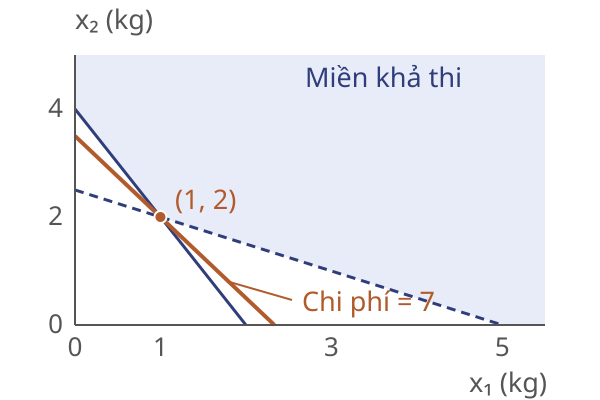
Biên liền: $2x_1+x_2=4$.
Nghiệm tối ưu: $x^\star=(1,\,2)$.
Nitơ $=4$ g, phốtpho $=5$ g (đủ đúng yêu cầu).
Chi phí: $3\cdot1+2\cdot2=7$, tức 70 nghìn đồng.
Câu hỏi: Nếu giá nguyên liệu I tăng từ 3 lên 4, nghiệm thay đổi thế nào?
Mô hình pha trộn đã được nhận dạng là LP và chứng nhận lồi. Còn lại ba việc: tìm nghiệm, chứng minh nghiệm đó tối ưu mà không dùng thuật toán, và đọc nghiệm thành quyết định mua.
Trên hình, hai trục là $x_1$ và $x_2$. Miền khả thi nằm trong góc phần tư thứ nhất, phía trên cả hai đường biên: biên liền $2x_1+x_2=4$ (nitơ) và biên đứt $x_1+2x_2=5$ (phốtpho). Các đường cùng chi phí $3x_1+2x_2=\alpha$ song song với nhau; giảm $\alpha$ làm đường dịch về phía gốc tọa độ. Giá trị $\alpha$ nhỏ nhất mà đường còn chạm miền khả thi là 7, tại giao điểm $(1,2)$ của hai biên. Hình chỉ gợi ý nghiệm; chứng minh như sau. Với mọi điểm khả thi, $$3x_1+2x_2=\tfrac43(2x_1+x_2)+\tfrac13(x_1+2x_2)\ge\tfrac43\cdot4+\tfrac13\cdot5=7.$$ Điểm $x^\star=(1,2)$ khả thi và đạt dấu bằng, nên là nghiệm tối ưu với chi phí 7 đơn vị, tức 70 nghìn đồng.
Đọc nghiệm: mua 1 kg nguyên liệu I và 2 kg nguyên liệu II; nitơ $2+2=4$ g và phốtpho $1+4=5$ g, cả hai yêu cầu vừa đủ. So với phương án chỉ dùng loại II (80 nghìn đồng), pha trộn tiết kiệm 10 nghìn đồng. Câu hỏi trên trang: nếu giá loại I tăng từ 3 lên 4 thì sao? Khi đó mục tiêu là $4x_1+2x_2=2(2x_1+x_2)\ge8$; mọi điểm trên đoạn nối $(0,4)$ và $(1,2)$ đều khả thi và đạt 8, nên có vô số nghiệm tối ưu. Ví dụ này có nghiệm tại một đỉnh, nhưng không chứng tỏ mọi LP đều có nghiệm, có đỉnh hay có nghiệm duy nhất. Nguồn: Boyd và Vandenberghe (2004), §4.3.1; số liệu và hình minh họa tự tạo.
Bài pha trộn tuyến tính ngay từ đầu; bài hồi quy với sai số tuyệt đối có mục tiêu lồi nhưng chứa trị tuyệt đối, nên chưa ở dạng LP.
Hồi quy với sai số tuyệt đối
Dự đoán đầu ra từ một đặc trưng, đánh giá tổng độ lệch.
$u_i$ $-2$ $-1$ $0$ $1$ $2$
$y_i$ $-2$ $-1$ $3$ $1$ $2$
Dữ liệu minh họa đã chuẩn hóa.
Mô hình: $\hat{y}_i=au_i+b$, tức $w=(a,b)$.
$X$ có hàng thứ $i$ là $(u_i,1)$; $w\in\mathbb{R}^2$.
$r=Xw-y$, mục tiêu $\min_w \sum_i |r_i|$.
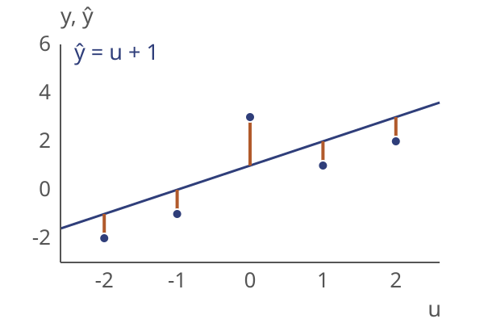
Hàm mục tiêu $\sum_i|r_i|$ đã lồi, nhưng trị tuyệt đối chưa ở dạng LP.
Bài pha trộn đã có cấu trúc tuyến tính sẵn. Ví dụ học máy này có mục tiêu lồi nhưng chưa tuyến tính, và tạo nhu cầu cho kỹ thuật biến phụ.
Dữ liệu gồm năm cặp $(u_i,y_i)$ với $u=(-2,-1,0,1,2)$ và $y=(-2,-1,3,1,2)$, đã chuẩn hóa và tự tạo để minh họa. Mô hình dự đoán $\hat y_i=au_i+b$ có tham số $w=(a,b)\in\mathbb R^2$. Ma trận $X\in\mathbb R^{5\times2}$ có hàng thứ $i$ là $(u_i,1)$, nên $Xw$ là vectơ năm dự đoán. Phần dư $r=Xw-y\in\mathbb R^5$ có thành phần $r_i=au_i+b-y_i$. Tiêu chí tổng sai số tuyệt đối là $\sum_i|r_i|$. Trên hình, năm điểm dữ liệu cùng đường thử $\hat y=u+1$; các đoạn thẳng đứng là phần dư. Với đường thử, các phần dư là $1,1,-2,1,1$, tổng sai số bằng 6. Cần chọn lại hệ số góc và hệ số chặn để giảm tổng này.
Mục tiêu đã lồi: $r$ affine theo $w$, hàm $|\cdot|$ lồi, hợp của hàm lồi với hàm affine là lồi, và tổng các hàm lồi là lồi. Tuy vậy $|\cdot|$ không affine, nên bài toán chưa thuộc dạng LP. Hàm cũng không khả vi tại các điểm có $r_i=0$, nên không giải bằng cách cho đạo hàm bằng 0. Mô hình dự đoán tuyến tính theo $u$ không làm bài toán tối ưu thành tuyến tính; lớp bài toán do hàm mất mát quyết định. Nguồn: Boyd và Vandenberghe (2004), §6.1.1 (xấp xỉ theo chuẩn $\ell_1$); dữ liệu minh họa tự tạo.
Trị tuyệt đối là giá trị lớn nhất của hai hàm tuyến tính, $|r|=\max(r,-r)$; tính chất này cho phép thay mỗi $|r_i|$ bằng một biến phụ cùng hai bất đẳng thức tuyến tính.
Biến phụ cho giá trị tuyệt đối
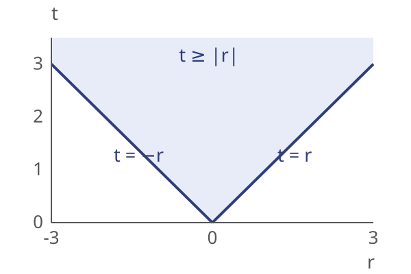
Với một số vô hướng $r$: $t\ge|r| \iff t\ge r$ và $t\ge -r$.
Với $m$ điểm, đặt một biến $t_i$ cho mỗi phần dư $r_i$; ghép thành $t\in\mathbb{R}^m$.
$$\begin{aligned}
\min_{w,\,t}\;& \mathbf{1}^Tt\\
\text{với}\quad & -t\le Xw-y\le t.
\end{aligned}$$
Tối thiểu hóa tổng các cận trên của sai số.
Mục tiêu $\sum_i|r_i|$ lồi nhưng không affine. Trị tuyệt đối được biểu diễn bằng các ràng buộc tuyến tính nhờ một biến mới chặn trên nó.
Với một số vô hướng $r$, vì $|r|=\max(r,-r)$ nên $t\ge|r|$ tương đương với hai bất đẳng thức tuyến tính $t\ge r$ và $t\ge-r$. Trên hình mặt phẳng $(r,t)$, miền $\{(r,t)\mid t\ge|r|\}$ là phần phía trên chữ V, gọi là tập trên đồ thị (epigraph) của $|\cdot|$; nó là giao của hai nửa mặt phẳng nên lồi. Với $m$ điểm dữ liệu và $n$ tham số, $X\in\mathbb R^{m\times n}$, $y\in\mathbb R^m$, $w\in\mathbb R^n$; mỗi phần dư $r_i$ có một biến phụ $t_i$, ghép thành $t\in\mathbb R^m$. Ràng buộc vectơ $-t\le Xw-y\le t$ hiểu theo từng thành phần, tức $2m$ bất đẳng thức tuyến tính theo $(w,t)$. Vectơ $\mathbf1$ có mọi thành phần bằng 1, nên $\mathbf1^Tt=\sum_it_i$. Với ví dụ năm điểm, $m=5$, $n=2$: bài mới có 7 biến và 10 bất đẳng thức.
Ý tưởng là tối thiểu hóa tổng các cận trên của sai số. Mỗi cặp khả thi chỉ bảo đảm $t_i\ge|r_i|$; khẳng định $t=|r|$ cho mọi cặp khả thi là sai. Chỉ tại nghiệm tối ưu, do mục tiêu đẩy từng $t_i$ xuống, mới có $t_i=|r_i|$. Kỹ thuật này dùng được cho mọi hàm là giá trị lớn nhất của các hàm affine, không riêng trị tuyệt đối. Nguồn: Boyd và Vandenberghe (2004), Convex Optimization , §4.3.1, §6.1.1.
Việc viết được một LP chưa đủ để thay bài gốc; còn phải chứng minh hai bài có cùng giá trị tối ưu và lấy lại được $w$ từ nghiệm của bài có biến phụ.
Tính tương đương của phép cải dạng
Từ bài toán gốc
Mọi $w$ cho ta chọn $t_i=|r_i|$: tạo nghiệm khả thi của bài LP với cùng giá trị mục tiêu $\sum_i|r_i|$.
Từ bài toán có biến phụ
Mọi $(w,t)$ khả thi có $\sum_i t_i\ge\sum_i|r_i|$.
Giá trị tối ưu hai bài toán bằng nhau; tại nghiệm tối ưu $t_i^\star=|r_i^\star|$, khôi phục được $w^\star$.
Bài có biến phụ là một LP. Bài đó tương đương với bài gốc $\min_w\sum_i|r_i|$: hai bài có cùng giá trị tối ưu và cùng tham số $w$ tối ưu.
Hai bài toán được so sánh là $\min_w\sum_i|r_i|$ và $\min_{w,t}\mathbf1^Tt$ với $-t\le Xw-y\le t$. Chiều thứ nhất, từ bài gốc: với mọi $w$, chọn $t_i=|r_i|$ thì $(w,t)$ khả thi và mục tiêu bằng $\sum_i|r_i|$; do đó giá trị tối ưu của LP không lớn hơn giá trị tối ưu gốc. Chiều thứ hai, từ bài có biến phụ: mọi $(w,t)$ khả thi có $t_i\ge|r_i|$, nên $\sum_it_i\ge\sum_i|r_i|$, tức mục tiêu LP không nhỏ hơn mục tiêu gốc tại cùng $w$; do đó giá trị tối ưu của LP không nhỏ hơn giá trị tối ưu gốc. Hai bất đẳng thức cho hai giá trị tối ưu bằng nhau.
Tại nghiệm tối ưu có $t_i^\star=|r_i^\star|$: nếu một $t_i>|r_i|$ thì giảm $t_i$ xuống $|r_i|$ vẫn khả thi và làm mục tiêu nhỏ hơn, mâu thuẫn với tính tối ưu. Khối $w^\star$ của nghiệm LP là nghiệm của bài gốc. Mục tiêu và ràng buộc mới affine, nên bài cải dạng là LP và lồi. Phép biến đổi chỉ thêm biến, không xấp xỉ: hai bài tương đương chính xác. Biến phụ $t$ không phải tham số dự đoán; mô hình dự đoán chỉ dùng $w$. Nguồn: Boyd và Vandenberghe (2004), Convex Optimization , §4.3.1, §6.1.1.
Với tương đương đã chứng minh, nghiệm của LP trên dữ liệu năm điểm được kiểm lại trực tiếp bằng mục tiêu gốc.
Nghiệm hồi quy với sai số tuyệt đối
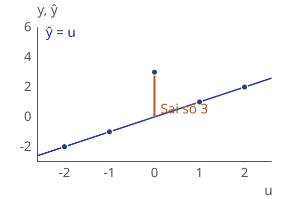
Nghiệm: $w^\star=(1,\,0)$, tức $\hat{y}=u$.
$r=(0,\,0,\,-3,\,0,\,0)$.
Tổng sai số tuyệt đối: $3$.
$t^\star=(0,\,0,\,3,\,0,\,0)$.
Phép cải dạng đã được chứng minh tương đương, nên nghiệm của LP trên dữ liệu năm điểm được kiểm bằng một cận dưới giải tích của mục tiêu gốc và diễn giải qua $w$ và $t$.
Nghiệm là $w^\star=(1,0)$, tức đường dự đoán $\hat y=u$. Phần dư $r=(0,0,-3,0,0)$: bốn điểm nằm đúng trên đường, điểm $(0,3)$ lệch 3; tổng sai số tuyệt đối bằng 3 và $t^\star=|r^\star|=(0,0,3,0,0)$. Trên hình, đường $\hat y=u$ đi qua bốn điểm và không dịch về phía điểm $(0,3)$. Chứng minh tối ưu: đặt $d=a-1$. Phần dư tại $u=\pm1$ là $b-d$ và $b+d$; tại $u=\pm2$ là $b-2d$ và $b+2d$; tại $u=0$ là $b-3$. Bất đẳng thức tam giác cho $|b-d|+|b+d|\ge2|b|$ và $|b-2d|+|b+2d|\ge2|b|$, nên tổng sai số không nhỏ hơn $4|b|+|b-3|$. Dùng $|b-3|\ge3-|b|$, tổng không nhỏ hơn $3+3|b|\ge3$. Cận 3 đạt tại $b=0$, $d=0$. Ngược lại, nếu tổng bằng 3 thì $b=0$; khi đó tổng còn $6|d|+3$, nên $d=0$. Vậy nghiệm duy nhất là $w^\star=(1,0)$.
Việc bốn điểm khớp chính xác là tính chất riêng của bộ dữ liệu này, không phải tính chất chung của hồi quy với sai số tuyệt đối. Giá trị $t^\star$ chỉ ghi lại độ lớn phần dư; dự đoán cho dữ liệu mới chỉ dùng $a^\star=1$, $b^\star=0$. Nguồn: Boyd và Vandenberghe (2004), §6.1.1; dữ liệu minh họa tự tạo.
Nghiệm này để điểm $(0,3)$ chịu sai số 3; tiêu chí cực tiểu sai số lớn nhất (minimax) $\max_i|r_i|$ trên cùng dữ liệu làm giảm sai số tệ nhất bằng một biến phụ chung.
Hồi quy với sai số lớn nhất
Mục tiêu ban đầu: $\min_w \max_i |r_i|$ — giảm sai số tệ nhất.
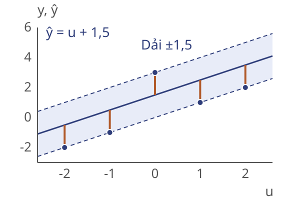
$$\begin{aligned}
\min_{w,\,t}\;& t\\
\text{với}\quad & -t\mathbf{1}\le Xw-y\le t\mathbf{1},\\
& t\in\mathbb{R}.
\end{aligned}$$
Một biến phụ chung $t\in\mathbb{R}$.
Nghiệm: $w^\star=(1,\,1{,}5)$, $t^\star=1{,}5$.
Sai số lớn nhất: $3\to1{,}5$; tổng sai số: $3\to7{,}5$.
Hồi quy với tổng sai số tuyệt đối để một điểm lệch 3. Khi yêu cầu là không điểm nào lệch quá nhiều, tiêu chí đổi thành sai số lớn nhất $\max_i|r_i|$, trên cùng dữ liệu, mô hình và ký hiệu $X,y,w,r$.
Mục tiêu gốc $\min_w\max_i|r_i|$ lồi, vì giá trị lớn nhất của các hàm lồi là lồi, nhưng không affine. Thay vì một biến phụ cho mỗi điểm, dùng một biến vô hướng $t\in\mathbb R$ chặn trên mọi phần dư: $-t\mathbf1\le Xw-y\le t\mathbf1$, tức $|r_i|\le t$ với mọi $i$. Bài mới có $n+1$ biến, $2m$ bất đẳng thức tuyến tính và mục tiêu $t$, nên là LP. Tương đương hai chiều: với mọi $w$, giá trị $t$ nhỏ nhất thỏa ràng buộc là $\max_i|r_i|$; ngược lại mọi cặp khả thi có $t\ge\max_i|r_i|$. Do đó hai bài cùng giá trị tối ưu và khối $w$ là nghiệm gốc.
Chứng minh cận dưới: đặt $d=a-1$; phần dư tại $u=\pm1$ là $b-d$ và $b+d$. Nếu mọi $|r_i|\le t$ thì $|b|=\left|\tfrac{(b-d)+(b+d)}{2}\right|\le t$; điểm $u=0$ cho $|b-3|\le t$. Do đó $3\le|b|+|b-3|\le2t$, tức $t\ge1{,}5$. Cận đạt tại $w^\star=(1,\,1{,}5)$, đường $\hat y=u+1{,}5$: phần dư bằng $1{,}5$ tại bốn điểm và $-1{,}5$ tại $(0,3)$. Trên hình, mọi điểm cách đường đúng 1,5. Điều này riêng cho dữ liệu này; nói chung không phải mọi điểm đều đạt cùng sai số $t$. So sánh hai tiêu chí trên ô kết luận: sai số lớn nhất giảm từ 3 xuống 1,5, còn tổng sai số tăng từ 3 lên 7,5. Mỗi nghiệm tối ưu theo tiêu chí của chính nó. Nguồn: Boyd và Vandenberghe (2004), §6.1.1 (xấp xỉ theo chuẩn vô cùng); dữ liệu minh họa tự tạo.
Ba ví dụ của phần đã cho đủ công cụ để phân loại các biến thể: biến thể nào vẫn là LP, biến thể nào mất tính lồi và biến thể nào lồi nhưng ra ngoài lớp LP.
Nhận dạng quy hoạch tuyến tính
Câu hỏi: Phân loại ba biến thể và giải thích tính lồi.
1. Thêm $a\ge 0$ vào bài hồi quy sai số tuyệt đối.
2. Buộc $x_1, x_2$ nguyên trong bài pha trộn.
3. Đổi mục tiêu hồi quy sang $\sum_i (au_i+b-y_i)^2$.
Ba biến thể kiểm tra việc áp dụng kết quả đã học khi mô hình đổi đúng một giả thiết. Câu trả lời cần nêu lớp bài toán và lý do lồi hoặc không lồi.
Biến thể 1: thêm $a\ge0$ vào bài hồi quy sai số tuyệt đối chỉ thêm một bất đẳng thức tuyến tính vào LP có biến phụ, nên bài vẫn là LP và lồi. Biến thể 2: buộc $x_1,x_2$ nguyên trong bài pha trộn làm tập khả thi không lồi. Chẳng hạn $(1,2)$ và $(2,2)$ đều khả thi và nguyên, nhưng trung điểm $(1{,}5;\,2)$ không nguyên. Bài này là quy hoạch nguyên (integer programming), không còn là LP. Ở ví dụ này nghiệm $(1,2)$ của bài liên tục tình cờ nguyên; nói chung nghiệm của bài liên tục không tự động là nghiệm của bài nguyên.
Biến thể 3: mục tiêu $\sum_i(au_i+b-y_i)^2$ không tuyến tính, nên không phải LP. Mục tiêu này vẫn lồi, vì là tổng bình phương của các hàm affine. Viết gọn, $\sum_i(au_i+b-y_i)^2=\|Xw-y\|_2^2$ có Hessian $2X^TX$, nửa xác định dương vì $v^T(2X^TX)v=2\|Xv\|_2^2\ge0$ với mọi $v$. Bài toán thuộc lớp quy hoạch bậc hai. Ba biến thể cho thấy ba khả năng: còn trong lớp LP, mất tính lồi, hoặc còn lồi nhưng ra khỏi lớp LP. Nguồn: Boyd và Vandenberghe (2004), §4.3–4.3.1, §6.1.1; ví dụ minh họa tự tạo.
Biến thể thứ ba, tổng bình phương sai số trên cùng dữ liệu năm điểm, là điểm xuất phát của phần quy hoạch bậc hai.
3
Phần 2 kết thúc với biến thể tổng bình phương sai số: mục tiêu lồi nhưng không tuyến tính, nên nằm ngoài lớp LP. Phần 3 xét lớp chứa biến thể đó: quy hoạch bậc hai (quadratic programming, QP), với mục tiêu bậc hai lồi và ràng buộc affine.
Phần này giữ nguyên dữ liệu năm điểm, mô hình $\hat y=au+b$ và ký hiệu $X,y,w,r$ của phần 2. Trước hết, hồi quy bình phương tối thiểu được viết ở dạng ma trận, chứng nhận lồi bằng Hessian và khái quát thành QP. Sau đó mục tiêu được bổ sung chính quy hóa, tạo bốn tổ hợp giữa hai tiêu chí sai số (tổng trị tuyệt đối, tổng bình phương) và hai hình phạt (chuẩn một, bình phương chuẩn hai). Ba trong bốn tổ hợp cần biến phụ của phần 2. Cuối phần, hình phạt được thay bằng một mức trần cứng cho độ lớn hệ số, dẫn tới quy hoạch bậc hai với ràng buộc bậc hai.
Đổi tiêu chí sai số tạo ra một bài toán khác, có nghiệm khác; cải dạng thì giữ nguyên bài toán và chỉ đổi cách viết. Hai thao tác này được tách riêng trong mọi ví dụ của phần. Nguồn: Boyd và Vandenberghe (2004), Convex Optimization , §4.4, §6.3.2.
Hồi quy với tổng bình phương sai số
Chọn đường dự đoán cho cùng năm điểm dữ liệu ở phần 2.
$w=(a,b)\in\mathbb{R}^2$, $\hat y_i=au_i+b$.
$$\min_w\; E(w)=\sum_{i=1}^{5}(au_i+b-y_i)^2$$
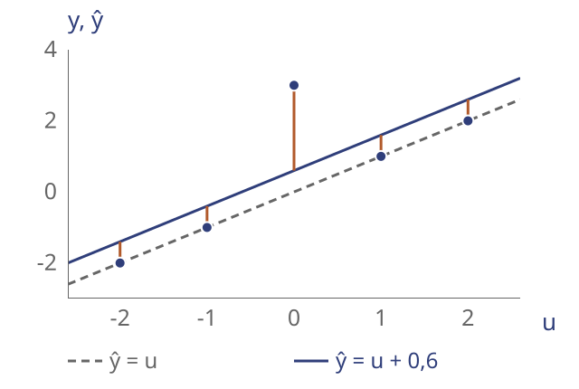
Hai ứng viên: $\hat y=u$ (nét đứt) và $\hat y=u+0{,}6$ (nét liền).
Biến thể thứ ba của phần 2 trở thành bài toán chính: cùng năm điểm, cùng mô hình $\hat y_i=au_i+b$ với $w=(a,b)\in\mathbb R^2$, nhưng đo mức khớp bằng tổng bình phương sai số $E(w)=\sum_{i=1}^5(au_i+b-y_i)^2$.
Bình phương làm điểm lệch xa bị phạt nặng hơn nhiều so với điểm lệch gần: phần dư 3 đóng góp 9 vào $E$, còn phần dư $0{,}6$ chỉ đóng góp $0{,}36$. Vì vậy đường tối ưu theo $E$ bị kéo về phía điểm có sai số lớn, ở đây là điểm $(0,3)$. Hình vẽ năm điểm và hai đường ứng viên. Đường $\hat y=u$ (nét đứt) là nghiệm của bài sai số tuyệt đối; nó khớp bốn điểm và lệch 3 tại $(0,3)$, nên $E=9$. Đường $\hat y=u+0{,}6$ (nét liền) có phần dư $0{,}6$ tại bốn điểm và $-2{,}4$ tại $(0,3)$, nên $E=4\cdot0{,}36+5{,}76=7{,}2$. Theo tiêu chí bình phương, ứng viên thứ hai tốt hơn, dù ứng viên thứ nhất là nghiệm tối ưu theo tổng sai số tuyệt đối. Phép so sánh này chưa chứng minh ứng viên nào là nghiệm.
Thay tổng sai số tuyệt đối bằng tổng bình phương không phải một phép cải dạng của bài ở phần 2. Đây là một bài toán khác ngay từ đầu, với tiêu chí khác và nghiệm khác. Nguồn: Boyd và Vandenberghe (2004), Convex Optimization , §4.4.1 (bình phương tối thiểu).
Để nhận ra cấu trúc bậc hai và chứng nhận tính lồi, $E$ được viết lại ở dạng ma trận theo $X$, $w$ và $y$.
Dạng bậc hai của bình phương sai số
$X\in\mathbb{R}^{m\times n}$, $w\in\mathbb{R}^n$, $y\in\mathbb{R}^m$; $r=Xw-y$.
$$\|Xw-y\|_2^2=w^TX^TXw-2y^TXw+y^Ty.$$
Chứng nhận: Hessian $2X^TX$ nửa xác định dương vì
$$v^T(2X^TX)v=2\|Xv\|_2^2\ge0,\quad\forall v\in\mathbb{R}^n.$$
Chỉ khai triển biểu thức: giữ nguyên mục tiêu và biến quyết định.
Mục tiêu $E(w)$ là một tổng bình phương. Viết nó ở dạng ma trận cho thấy cấu trúc bậc hai theo $w$ và cho phép chứng nhận tính lồi bằng Hessian.
Kích thước tổng quát: $X\in\mathbb R^{m\times n}$, $w,v\in\mathbb R^n$, $y,r\in\mathbb R^m$; trong ví dụ $m=5$, $n=2$. Vì $\|Xw-y\|_2^2=(Xw-y)^T(Xw-y)$ và $w^TX^Ty=y^TXw$ là cùng một số vô hướng, khai triển cho ba thành phần: phần bậc hai $w^TX^TXw$, phần bậc nhất $-2y^TXw$ và hằng số $y^Ty$. Gradient là $2X^TXw-2X^Ty$, Hessian là ma trận hằng $2X^TX$. Chứng nhận trên trang: với mọi $v$, $v^T(2X^TX)v=2\|Xv\|_2^2\ge0$, nên Hessian nửa xác định dương với mọi ma trận dữ liệu $X$, và $E$ lồi.
Nếu $X$ có hạng đầy cột thì $Xv\ne0$ khi $v\ne0$, nên $X^TX$ xác định dương và $E$ lồi chặt (còn gọi là lồi nghiêm ngặt). Điều kiện hạng chỉ cần cho tính lồi chặt và tính duy nhất của nghiệm, không cần cho tính lồi. Trong ví dụ, $X^TX=\operatorname{diag}(10,5)$ vì $\sum_iu_i^2=10$, $\sum_iu_i=0$ và có năm điểm; $X$ có hạng đầy cột. Ô kết luận phân biệt thao tác này với hai thao tác đã gặp: khai triển giữ nguyên biến và giá trị mục tiêu; nó khác việc đổi tiêu chí ở trang trước và khác việc thêm biến phụ ở phần 2. Nguồn: Boyd và Vandenberghe (2004), Convex Optimization , §4.4, §4.4.1; phép khai triển được trình bày với ký hiệu của ví dụ.
Cấu trúc gồm phần bậc hai với ma trận nửa xác định dương, phần bậc nhất và hằng số được khái quát thành dạng phổ biến của quy hoạch bậc hai, có thêm ràng buộc affine.
Dạng phổ biến của quy hoạch bậc hai
$$\begin{aligned}
\min_{x\in\mathbb{R}^n}\;&\tfrac12x^TPx+q^Tx+r_0\\
\text{với}\quad&Gx\le h,\quad Ax=b.
\end{aligned}$$
$P=P^T\succeq0$: mục tiêu lồi.
Ràng buộc affine: tập khả thi lồi.
$P=0$: quy hoạch tuyến tính là một trường hợp riêng.
Khai triển bình phương tối thiểu cho một mục tiêu bậc hai lồi không có ràng buộc. Khái quát cấu trúc này cho lớp quy hoạch bậc hai (QP): mục tiêu bậc hai lồi cùng các ràng buộc affine như ở LP.
Kích thước: $x\in\mathbb R^n$, $P\in\mathbb R^{n\times n}$, $q\in\mathbb R^n$, $r_0\in\mathbb R$; $G\in\mathbb R^{m\times n}$, $h\in\mathbb R^m$; $A\in\mathbb R^{p\times n}$, $b\in\mathbb R^p$. Hệ số $\tfrac12$ là quy ước để gradient của mục tiêu bằng $Px+q$ và Hessian bằng $P$. Chứng nhận gồm hai thẻ trên trang: $P=P^T\succeq0$ cho mục tiêu lồi; ràng buộc affine cho tập khả thi là đa diện, nên lồi. Bình phương tối thiểu khớp dạng này với $x=w$, $P=2X^TX$, $q=-2X^Ty$, $r_0=y^Ty$ và không có ràng buộc. Ô kết luận nêu quan hệ bao hàm: khi $P=0$, mục tiêu affine và bài toán là LP, nên mọi LP là một QP.
Tên gọi quy hoạch bậc hai không tự bảo đảm tính lồi. Nếu $P$ có một trị riêng âm thì mục tiêu không lồi, và bài toán nằm ngoài khung chứng nhận đang dùng. Một QP lồi cũng chưa chắc có nghiệm, giống như ví dụ hàm nghịch đảo ở phần 1 đã cho thấy đối với bài toán lồi nói chung. Nguồn: Boyd và Vandenberghe (2004), Convex Optimization , §4.4 (QP), §4.4.1.
Với dạng QP đã có, bài bình phương tối thiểu trên năm điểm được giải bằng cách hoàn thành bình phương, rồi thêm một ràng buộc affine để thấy nghiệm dịch lên biên.
Nghiệm hồi quy bình phương tối thiểu
$$w^\star=\begin{pmatrix}1\\ 3/5\end{pmatrix},\qquad E(w^\star)=\frac{36}{5}$$
Dự đoán: $\hat y=u+0{,}6$. Câu hỏi: thêm $a\le 1/2$ thì sao?
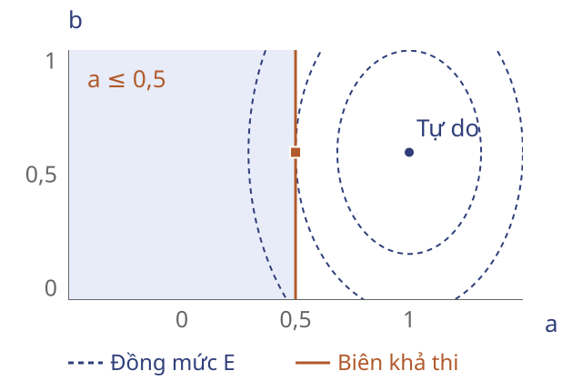
Đồng mức $E$; nghiệm tự do $(1;0{,}6)$; miền $a\le0{,}5$; nghiệm có ràng buộc $(0{,}5;0{,}6)$.
Bình phương tối thiểu là QP không ràng buộc với $P=2X^TX$ xác định dương. Trang này tính nghiệm, đọc nghiệm thành đường dự đoán và dùng hình đồng mức để xem tác động của một ràng buộc affine.
Với dữ liệu năm điểm, $X^TX=\operatorname{diag}(10,5)$, $X^Ty=(10,3)$ và $y^Ty=19$. Do đó $E(w)=10a^2-20a+5b^2-6b+19$. Hoàn thành bình phương theo từng biến: $$E(w)=10(a-1)^2+5\left(b-\tfrac35\right)^2+\tfrac{36}{5}.$$ Hai bình phương không âm và bằng 0 khi $a=1$, $b=3/5$, nên $w^\star=(1,3/5)$ và $E(w^\star)=36/5=7{,}2$. Đường dự đoán $\hat y=u+0{,}6$ trùng ứng viên thứ hai đã thử. So với nghiệm sai số tuyệt đối $\hat y=u$, đường dịch lên $0{,}6$ về phía điểm $(0,3)$. Vì $X$ có hạng đầy cột, nghiệm tự do này duy nhất.
Trên hình, trục ngang là $a$, trục dọc là $b$; các đường đồng mức của $E$ là những elip đồng tâm tại nghiệm tự do $(1;\,0{,}6)$. Miền $a\le0{,}5$ là nửa mặt phẳng bên trái đường thẳng đứng $a=0{,}5$. Câu hỏi trên trang: thêm $a\le1/2$ thì sao? Vì $E$ tách thành tổng một hàm của $a$ và một hàm của $b$, chỉ cần làm nhỏ $10(a-1)^2$ trên $a\le1/2$; hàm này giảm trên miền đó, nên $a=1/2$, còn $b=3/5$ giữ nguyên. Nghiệm có ràng buộc là $(1/2,3/5)$ với $E=5/2+36/5=97/10$, nằm trên biên, đúng là điểm của miền chạm đồng mức thấp nhất trên hình. Không tiêu chí nào tốt hơn trong mọi trường hợp; chọn tiêu chí là chọn cách đo sai số. Nguồn: Boyd và Vandenberghe (2004), Convex Optimization , §4.4.1; dữ liệu và hình tự tạo.
Hai tiêu chí sai số đã xét chỉ đo mức khớp dữ liệu; khi cần kiểm soát thêm độ lớn hệ số, mục tiêu được bổ sung một hình phạt theo $w$.
Chính quy hóa trong hồi quy
Cần vừa khớp dữ liệu, vừa kiểm soát độ lớn hệ số.
$$\min_w\;L(w)+\lambda R(w),\quad\lambda\ge0.$$
Sai số: $L(w)=\|r\|_1$ hoặc $\|r\|_2^2$.
Hình phạt: $R(w)=\|w\|_1$ hoặc $\|w\|_2^2$.
Chính quy hóa (regularization) thêm yêu cầu vào mô hình.
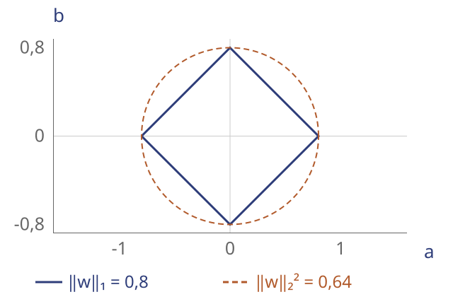
Hai tiêu chí sai số $\|r\|_1$ của phần 2 và $\|r\|_2^2$ vừa xét chỉ đo mức khớp dữ liệu. Nhu cầu mới là kiểm soát độ lớn hệ số $w$, và nhu cầu này làm đổi mô hình.
Mục tiêu có chính quy hóa là $L(w)+\lambda R(w)$, trong đó $L$ là tiêu chí sai số, $R$ là hình phạt và $\lambda\ge0$ cân bằng hai thành phần. Tham số $\lambda$ là dữ liệu do người xây dựng mô hình chọn; $w$ là biến cần tối ưu. Với $\lambda=0$ ta trở về bài không phạt; khi $\lambda$ tăng, giá trị hình phạt $R(w)$ tại nghiệm không tăng, nhưng từng hệ số không nhất thiết giảm. Hai lựa chọn của $L$ và hai lựa chọn của $R$ tạo bốn tổ hợp, mỗi tổ hợp được xét riêng. Chuẩn một $\|w\|_1=|a|+|b|$ khác bình phương chuẩn hai $\|w\|_2^2=a^2+b^2$; không dùng chuẩn hai chưa bình phương thay thế ngầm. Chính quy hóa thêm một yêu cầu vào mô hình, nên mọi phép cải dạng sau đó phải tương đương với mô hình có phạt, không phải với bài cũ.
Hình vẽ trên mặt phẳng $(a,b)$ với hai trục cùng tỷ lệ: đường mức của chuẩn một là hình thoi có đỉnh nằm trên các trục; đường mức của bình phương chuẩn hai là đường tròn. Đỉnh của hình thoi gợi ý rằng phạt chuẩn một có thể đưa một số hệ số về đúng 0; đây là trực quan, không bảo đảm nghiệm luôn thưa (sparse), tức có nhiều hệ số bằng 0, và không bảo đảm cả vectơ bằng 0. Ví dụ phạt cả hệ số góc và hệ số chặn $w=(a,b)$; nhiều mô hình thực tế chỉ phạt một phần hệ số. Thang đo của đặc trưng ảnh hưởng mức phạt, nên dữ liệu ở đây đã chuẩn hóa. Chính quy hóa không chắc cải thiện dự đoán ngoài mẫu (out-of-sample). Nguồn: Boyd và Vandenberghe (2004), Convex Optimization , §6.3.2.
Tổ hợp đầu tiên, sai số tuyệt đối với chuẩn một, chỉ chứa trị tuyệt đối, nên kỹ thuật biến phụ của phần 2 áp dụng cho cả hai số hạng.
Sai số tuyệt đối và chính quy hóa chuẩn một
Với $\lambda\ge0$, $r=Xw-y$:
$$\min_w\;\|r\|_1+\lambda\|w\|_1.$$
Thêm biến phụ $t$ cho sai số, $v$ cho hệ số:
$$\begin{aligned}
\min_{w,t,v}\;&\mathbf1^Tt+\lambda\mathbf1^Tv\\
\text{với}\quad&-t\le Xw-y\le t,\quad -v\le w\le v.
\end{aligned}$$
Mục tiêu và ràng buộc affine: quy hoạch tuyến tính lồi.
Tổ hợp này gần phần 2 nhất: cả sai số $\|r\|_1$ lẫn hình phạt $\|w\|_1$ đều là tổng trị tuyệt đối. Kỹ thuật biến phụ được dùng hai lần và cho một LP.
Kích thước trong ví dụ: $X\in\mathbb R^{5\times2}$, $w,v\in\mathbb R^2$, $y,r,t\in\mathbb R^5$. Biến phụ $t$ chặn trên phần dư qua $-t\le Xw-y\le t$, biến phụ $v$ chặn trên hệ số qua $-v\le w\le v$; mục tiêu $\mathbf1^Tt+\lambda\mathbf1^Tv$ tuyến tính. Chứng minh tương đương: với mọi $w$, chọn $t=|r|$, $v=|w|$ (lấy trị tuyệt đối theo từng thành phần) cho cùng giá trị mục tiêu; ngược lại, mọi bộ khả thi có $\mathbf1^Tt\ge\|r\|_1$ và $\mathbf1^Tv\ge\|w\|_1$, và vì $\lambda\ge0$ nên mục tiêu mới không nhỏ hơn mục tiêu gốc. Khối $w$ của nghiệm là nghiệm gốc. Tại tối ưu $t=|r|$; $v=|w|$ khi $\lambda>0$, còn khi $\lambda=0$ biến $v$ không bị ép chặt.
Kiểm số: từ $|b-d|+|b+d|\ge2|d|$ và $|b-2d|+|b+2d|\ge4|d|$ với $d=a-1$, tổng sai số tuyệt đối không nhỏ hơn $6|a-1|+|b-3|$. Cộng hình phạt và dùng $|b-3|\ge3-|b|$, mục tiêu không nhỏ hơn $6|a-1|+\lambda|a|+3+(\lambda-1)|b|$. Với $\lambda=4$: $6|a-1|+4|a|\ge4$ và $3|b|\ge0$, nên mục tiêu ít nhất 7; điểm $w^\star=(1,0)$ có tổng sai số 3 và phạt 4, đạt 7. Với $\lambda=8$: $6|a-1|+8|a|\ge6$, nên mục tiêu ít nhất 9; điểm $w^\star=(0,0)$ cho tổng sai số $\sum_i|y_i|=9$ và phạt 0, đạt 9. Phạt đủ mạnh đưa cả hai hệ số về 0. Dự đoán dùng $au+b$ với $w$ sau khi giải; $t,v$ chỉ phục vụ biểu diễn. Nguồn: Boyd và Vandenberghe (2004), §4.3, §6.3.2; phép cải dạng và số liệu do nhóm tự xây dựng.
Thay hình phạt chuẩn một bằng bình phương chuẩn hai làm mục tiêu có thêm thành phần bậc hai, nên bài cải dạng không còn là LP.
Sai số tuyệt đối và chính quy hóa bậc hai
Với $\lambda\ge0$, $r=Xw-y$:
$$\min_w\;\|r\|_1+\lambda\|w\|_2^2.$$
Giữ hình phạt bậc hai; chỉ thêm biến phụ cho sai số:
$$\begin{aligned}
\min_{w,t}\;&\mathbf1^Tt+\lambda w^Tw\\
\text{với}\quad&-t\le Xw-y\le t.
\end{aligned}$$
Mục tiêu bậc hai lồi, ràng buộc affine: bài toán QP.
Tổ hợp thứ hai giữ sai số tuyệt đối và đổi hình phạt sang $\lambda\|w\|_2^2$. Chỉ sai số cần biến phụ; hình phạt đã ở dạng bậc hai $w^Tw$ nên được giữ nguyên.
Khi khái quát, $X\in\mathbb R^{m\times n}$, $w\in\mathbb R^n$, $t\in\mathbb R^m$; trong ví dụ $m=5$, $n=2$. Bài có biến phụ có mục tiêu $\mathbf1^Tt+\lambda w^Tw$ và các ràng buộc affine $-t\le Xw-y\le t$. Theo thứ tự biến $(w,t)$, ma trận bậc hai là $P=\operatorname{diag}(2\lambda I_n,0_{m\times m})\succeq0$, nên đây là QP lồi. Tương đương hai chiều như ở phần 2: mọi $w$ chọn $t=|Xw-y|$ cho cùng mục tiêu; mọi cặp khả thi có $\mathbf1^Tt\ge\|Xw-y\|_1$. Hai bài cùng giá trị tối ưu và khôi phục được $w$.
Ma trận $P$ của bài có biến phụ chỉ nửa xác định dương, vì khối ứng với $t$ bằng 0. Tuy vậy mục tiêu gốc theo $w$ là tổng của một hàm lồi và hàm lồi chặt $\lambda\|w\|_2^2$ khi $\lambda>0$, nên lồi chặt, và $w^\star$ duy nhất mà không cần điều kiện hạng của $X$. Kiểm số với $\lambda=4$: $w^\star=(3/4,1/8)$, tổng sai số tuyệt đối $35/8$, hình phạt $4(9/16+1/64)=37/16$, mục tiêu $107/16$. Chứng nhận: theo cận ở tổ hợp sai số tuyệt đối với chuẩn một, $\sum_i|r_i|\ge6|a-1|+|b-3|$, dấu bằng khi $|b|\le|a-1|$. Dùng thêm $|b-3|\ge3-b$, mục tiêu không nhỏ hơn $g(a,b)=6|a-1|+3-b+4(a^2+b^2)$. Với $a>1$, $\partial g/\partial a=6+8a>0$, nên chỉ cần xét $a\le1$; trên miền đó $g=9-6a-b+4a^2+4b^2$ có gradient bằng 0 tại $(3/4,1/8)$. Hàm $g$ lồi, khả vi tại $(3/4,1/8)$ với gradient 0, nên đó là cực tiểu toàn cục, với giá trị $107/16$. Các dấu bằng đều đạt vì $|b|=1/8\le1/4=|a-1|$ và $b\le3$. Câu hỏi: $\lambda=0$ cho bài nào? Đáp án: LP của hồi quy sai số tuyệt đối thuần. Nguồn: Boyd và Vandenberghe (2004), §6.3.2; ví dụ tự xây dựng từ khung QP.
Tổ hợp thứ ba đổi vai hai thành phần: sai số bình phương giữ nguyên dạng bậc hai, còn hình phạt chuẩn một cần biến phụ.
Bình phương sai số và chính quy hóa chuẩn một
Với $\lambda\ge0$, $r=Xw-y$:
$$\min_w\;\|r\|_2^2+\lambda\|w\|_1.$$
Giữ sai số bậc hai; thêm biến phụ cho hệ số:
$$\begin{aligned}
\min_{w,v}\;&\|Xw-y\|_2^2+\lambda\mathbf1^Tv\\
\text{với}\quad&-v\le w\le v.
\end{aligned}$$
Với $\lambda>0$, hàm gốc không trơn; cải dạng là QP lồi.
Tổ hợp thứ ba giữ tổng bình phương sai số và dùng hình phạt chuẩn một. Sai số đã là hàm bậc hai lồi; chỉ hình phạt chứa trị tuyệt đối nên chỉ cần biến phụ $v$ cho hệ số.
Trong ví dụ $w,v\in\mathbb R^2$. Theo thứ tự $(w,v)$, mục tiêu $\|Xw-y\|_2^2+\lambda\mathbf1^Tv$ có ma trận bậc hai $P=\operatorname{diag}(2X^TX,0_{n\times n})\succeq0$, các ràng buộc $-v\le w\le v$ affine, nên bài cải dạng là QP lồi. Mỗi $w$ chọn $v=|w|$ cho cùng mục tiêu; ngược lại mọi cặp khả thi có $\mathbf1^Tv\ge\|w\|_1$, và nhân với $\lambda\ge0$ bảo toàn bất đẳng thức. Do đó cải dạng tương đương và lấy lại được $w$. Khi $\lambda=0$, $v$ không bị ép bằng $|w|$. Ô kết luận nêu hai tính chất khác nhau: với $\lambda>0$ hàm gốc không trơn vì $|w_j|$ không khả vi tại 0, còn bài cải dạng có mục tiêu trơn và ràng buộc tuyến tính. Tính không trơn của hàm gốc không ngăn bài toán thuộc lớp QP sau cải dạng.
Với dữ liệu này, mục tiêu tách thành $10(a-1)^2+\lambda|a|$ cộng $5(b-3/5)^2+\lambda|b|$ cộng hằng số $36/5$, nên làm nhỏ riêng từng phần. Với $a>0$, đạo hàm $20(a-1)+\lambda=0$ cho $a=1-\lambda/20$, hợp lệ khi $\lambda<20$; khi $\lambda\ge20$, hàm tăng trên $a>0$ và giảm trên $a<0$, nên $a=0$. Tương tự cho $b$, với đạo hàm $10(b-3/5)+\lambda$ trên $b>0$ và ngưỡng $\lambda=6$. Kết quả là $$w_\lambda=\left(\max\left(1-\tfrac{\lambda}{20},0\right),\ \max\left(\tfrac35-\tfrac{\lambda}{10},0\right)\right).$$ Với $\lambda=4$, $w^\star=(4/5,1/5)$, tổng bình phương sai số $42/5$, mục tiêu $42/5+4=62/5$. Với $\lambda=8$, $w=(3/5,0)$: hệ số chặn đã bằng 0. Công thức này dùng riêng cấu trúc $X^TX=\operatorname{diag}(10,5)$, không áp cho mọi ma trận dữ liệu; tính thưa ở $\lambda=8$ là của dữ liệu này. Vì $X$ có hạng đầy cột, tổng bình phương lồi chặt và $w$ duy nhất. Nguồn: Boyd và Vandenberghe (2004), §6.5.4; cải dạng do nhóm soạn tự xây dựng.
Tổ hợp cuối có cả sai số và hình phạt ở dạng bình phương, nên khai triển trực tiếp cho một QP không cần biến phụ.
Bình phương sai số và chính quy hóa bậc hai
Với $\lambda\ge0$, $r=Xw-y$:
$$\min_w\;\|r\|_2^2+\lambda\|w\|_2^2.$$
Khối bậc hai sau khai triển:
$$P=2(X^TX+\lambda I)\succeq0.$$
Không cần biến phụ: đây là QP lồi.
$\lambda>0$: $P\succ0$, nghiệm $w$ duy nhất.
Tổ hợp thứ tư dùng tổng bình phương sai số và bình phương chuẩn hai. Cả hai thành phần đều là bình phương, nên khai triển như ở bình phương tối thiểu là đủ, không cần biến phụ.
Khai triển cho $w^T(X^TX+\lambda I)w-2y^TXw+y^Ty$, với cùng biến $w$ và cùng giá trị; ma trận bậc hai theo quy ước $\tfrac12x^TPx$ là $P=2(X^TX+\lambda I)\succeq0$, ràng buộc không có, nên đây là QP lồi. Với mọi $d\ne0$, $d^T(X^TX+\lambda I)d=\|Xd\|_2^2+\lambda\|d\|_2^2>0$ khi $\lambda>0$. Do đó $P\succ0$, mục tiêu lồi chặt và nghiệm duy nhất, không cần điều kiện hạng của $X$. Khi $\lambda=0$, tính duy nhất cần $X$ có hạng đầy cột. Mô hình này còn gọi là chính quy hóa Tikhonov.
Kiểm số với $\lambda=10$: $X^TX+\lambda I=\operatorname{diag}(20,15)$ và điều kiện dừng $(X^TX+\lambda I)w=X^Ty$ cho $20a=10$, $15b=3$. Vậy $w^\star=(1/2,1/5)$; tổng bình phương sai số $21/2$, hình phạt $10\cdot29/100=29/10$, mục tiêu $67/5$. Đây là cực tiểu toàn cục duy nhất vì Hessian xác định dương. Phép khai triển tương đương với mô hình đã có hình phạt, không với bài chưa phạt. Câu hỏi: nếu chỉ phạt một phần hệ số thì sao? Khi đó ma trận cộng thêm có dạng $\lambda\operatorname{diag}(1,0)$ chẳng hạn, không còn xác định dương tự động, và tính duy nhất lại phụ thuộc $X$. Ví dụ phạt cả $a$ và $b$ để minh họa, không phải quy ước mặc định của mọi mô hình. Nguồn: Boyd và Vandenberghe (2004), §6.3.2, §4.4.1.
Nghiệm $w^\star=(1/2,1/5)$ với $\lambda=10$ là hàng cuối của bảng đối chiếu bốn nghiệm $w^\star$ trên cùng dữ liệu.
Nghiệm hồi quy có chính quy hóa
Cùng dữ liệu, bốn lựa chọn sai số và hình phạt.
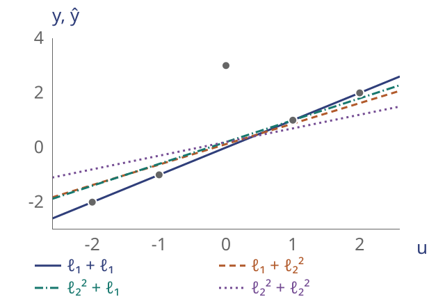
Sai số + phạt $\lambda$ $w^\star$ Dạng
$\ell_1+\ell_1$ $4$ $(1,0)$ LP $\ell_1+\ell_2^2$ $4$ $(3/4,1/8)$ QP $\ell_2^2+\ell_1$ $4$ $(4/5,1/5)$ QP $\ell_2^2+\ell_2^2$ $10$ $(1/2,1/5)$ QP
Câu hỏi: $\lambda=0$ khôi phục mô hình nào ở mỗi hàng?
Bốn trang trước giải riêng bốn tổ hợp sai số và hình phạt. Trang này đặt bốn nghiệm cạnh nhau để đọc tác động của chính quy hóa và nhắc giới hạn của phép so sánh.
Bảng dùng $\ell_1$ cho chuẩn một và $\ell_2^2$ cho bình phương chuẩn hai, viết theo thứ tự sai số rồi hình phạt. Cột $\lambda$ cho tham số đã chọn, cột $w^\star=(a,b)$ cho nghiệm, cột cuối cho lớp bài toán sau cải dạng: chỉ hàng đầu là LP, ba hàng còn lại là QP với $\lambda>0$. Bốn đường trên hình lần lượt là $\hat y=u$, $\hat y=\tfrac34u+\tfrac18$, $\hat y=\tfrac45u+\tfrac15$ và $\hat y=\tfrac12u+\tfrac15$, phân biệt bằng màu và nét. Nên so mỗi hàng với nghiệm không phạt cùng tiêu chí sai số: $(1,0)$ cho sai số tuyệt đối và $(1,3/5)$ cho bình phương tối thiểu. Hàng đầu giữ nguyên $(1,0)$ ở $\lambda=4$. Ở ba hàng còn lại, độ lớn của $w$ đo bằng chính hình phạt của hàng đó giảm, nhưng từng hệ số không nhất thiết giảm: ở hàng hai, hệ số góc giảm từ 1 xuống $3/4$ còn hệ số chặn tăng từ 0 lên $1/8$.
Giá trị mục tiêu bốn hàng là $7$, $107/16$, $62/5$, $67/5$. Mỗi giá trị được kiểm theo mục tiêu của chính hàng đó, nên không so sánh các số này như cùng một thước đo; hàng cuối còn dùng $\lambda=10$, khác ba hàng kia. Các $\lambda$ chọn để minh họa, chưa phải kết quả chọn tham số trên tập kiểm định (validation set). Câu hỏi trên trang: $\lambda=0$ khôi phục mô hình nào? Đáp án: hai hàng đầu trở về hồi quy sai số tuyệt đối với nghiệm $(1,0)$; hai hàng cuối trở về bình phương tối thiểu với nghiệm $(1,3/5)$. Nguồn: Boyd và Vandenberghe (2004), §6.3.2, §6.5.4; dữ liệu, nghiệm và hình tự xây dựng.
Hình phạt là một chi phí mềm cho phép đánh đổi giữa khớp dữ liệu và độ lớn hệ số; khi yêu cầu là một mức trần bắt buộc, độ lớn hệ số phải đi vào ràng buộc.
Hồi quy với giới hạn độ lớn hệ số
Cần một mức trần bắt buộc cho độ lớn hệ số.
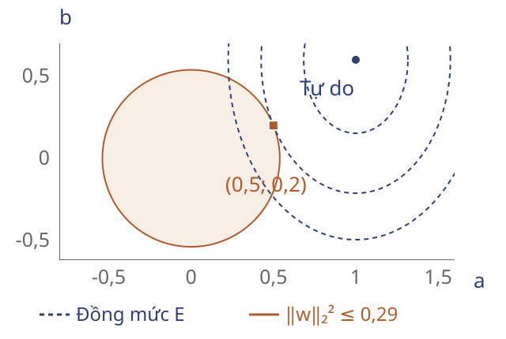
$$\begin{aligned}
\min_w\;&E(w)\\
\text{với}\quad&\|w\|_2^2\le\tfrac{29}{100}.
\end{aligned}$$
$w^\star=(1/2,1/5)$.
$E(w^\star)=21/2$.
Hình phạt $\lambda\|w\|_2^2$ cho phép hệ số lớn nếu sai số giảm đủ nhiều. Khi yêu cầu là độ lớn hệ số không được vượt một mức cho trước, mức đó phải là ràng buộc. Mô hình như vậy được xét trên cùng dữ liệu, với $w\in\mathbb R^2$.
Mô hình là $\min_wE(w)$ với $\|w\|_2^2\le R^2$, ở đây $R^2=29/100$; $R$ là bán kính, khác hàm phạt $R(w)$ ở trang chính quy hóa. Đặt $g(w)=w^Tw-29/100$; Hessian của $g$ là $2I\succ0$, nên $g$ lồi và tập $\{w\mid g(w)\le0\}$, một hình tròn, là tập lồi. Mục tiêu $E$ lồi như đã chứng nhận. Trên hình, hình tròn tâm gốc là miền khả thi; nghiệm tự do $(1;\,0{,}6)$ nằm ngoài vì $\|(1,3/5)\|_2^2=34/25>29/100$; đường đồng mức $E=10{,}5$ chạm hình tròn tại $(0{,}5;\,0{,}2)$. Nghiệm có ràng buộc nằm trên biên.
Chứng minh tối ưu: $w^\star=(1/2,1/5)$ là nghiệm của bài phạt với $\lambda=10$, nên $E(w)+10\|w\|_2^2\ge E(w^\star)+10\cdot\tfrac{29}{100}$ với mọi $w$. Với $w$ khả thi, $$E(w)\ge E(w^\star)+10\left(\tfrac{29}{100}-\|w\|_2^2\right)\ge E(w^\star).$$ Vì $\|w^\star\|_2^2=1/4+1/25=29/100$, điểm $w^\star$ khả thi, nên nó tối ưu với $E(w^\star)=21/2$. Bán kính được chọn đúng bằng chuẩn của nghiệm phạt $\lambda=10$, có chủ đích minh họa, nên trong ví dụ này $\lambda=10$ ứng với $R^2=29/100$. Không suy ra quan hệ $\lambda=R$ hay một công thức chung giữa $\lambda$ và $R$; mô hình phạt và mô hình trần cứng chỉ cùng nghiệm khi quan hệ tham số đã được xác lập. Trường hợp biên: $R=0$ buộc $w=0$; khi $R^2\ge34/25$, nghiệm bình phương tối thiểu khả thi và là nghiệm. Bài không có biến phụ nên không cần bước khôi phục. Nguồn: Boyd và Vandenberghe (2004), §4.4, §6.3.2; bán kính, số liệu, cận dưới và hình do nhóm tự xây dựng.
Ràng buộc hình tròn là một bất đẳng thức bậc hai lồi; cho phép cả mục tiêu lẫn các ràng buộc ở dạng bậc hai lồi ta được lớp quy hoạch bậc hai với ràng buộc bậc hai.
Quy hoạch bậc hai với ràng buộc bậc hai
$$\begin{aligned}
\min_{x\in\mathbb R^n}\;&\tfrac12x^TP_0x+q_0^Tx+r_0\\
\text{với}\quad&\tfrac12x^TP_ix+q_i^Tx+r_i\le0,\quad i=1,\ldots,m,\\
&Ax=b.
\end{aligned}$$
Chứng nhận: $P_i=P_i^T\succeq0$ với $i=0,\ldots,m$.
Mục tiêu lồi; các bất đẳng thức lồi và đẳng thức affine xác định tập khả thi lồi.
Mô hình giới hạn hệ số có mục tiêu bậc hai và một ràng buộc bậc hai. Trang này khái quát thành quy hoạch bậc hai với ràng buộc bậc hai (quadratically constrained quadratic program, QCQP) và nêu điều kiện chứng nhận.
Kích thước: $x\in\mathbb R^n$; với $i=0,\ldots,m$, $P_i\in\mathbb R^{n\times n}$ đối xứng, $q_i\in\mathbb R^n$, $r_i\in\mathbb R$; $A\in\mathbb R^{p\times n}$, $b\in\mathbb R^p$. Chỉ số $i=0$ dành cho mục tiêu, $i=1,\ldots,m$ cho các bất đẳng thức. Chứng nhận: $P_0\succeq0$ cho mục tiêu lồi; mỗi $P_i\succeq0$ với $i\ge1$ cho hàm ràng buộc lồi, nên tập mức dưới tương ứng lồi; $Ax=b$ affine. Theo khung ở phần 1, tập khả thi là giao các tập lồi và bài toán lồi.
Mô hình giới hạn hệ số là trường hợp riêng với $x=w$: $P_0=2X^TX$, $q_0=-2X^Ty$, $r_0=y^Ty$, và $P_1=2I$, $q_1=0$, $r_1=-29/100$ cho ràng buộc $\|w\|_2^2\le29/100$. Nếu $P_i=0$ với mọi $i\ge1$ thì mọi ràng buộc affine và QCQP trở thành QP; nếu thêm $P_0=0$ thì thành LP. Ba lớp lồng nhau theo thứ tự LP, QP, QCQP. Câu hỏi: một ma trận đối xứng tùy ý trong ràng buộc có giữ được tính lồi không? Đáp án: không; thiếu điều kiện $P_i\succeq0$ thì tập khả thi có thể không lồi. Ràng buộc $\|w\|_2^2\ge R^2$ ở bài nhận dạng kế tiếp, viết thành $R^2-w^Tw\le0$, có ma trận $-2I$ và là một trường hợp như vậy. Nguồn: Boyd và Vandenberghe (2004), Convex Optimization , §4.4.
Ba biến thể nhận dạng cuối phần kiểm tra khung chứng nhận của QP và QCQP khi thêm ràng buộc, đảo chiều bất đẳng thức hoặc đặt hệ số phạt bằng 0.
Nhận dạng và chứng nhận bài toán bậc hai
Câu hỏi: Phân loại và giải thích từng biến thể.
1. Thêm $\|w\|_1\le R$, $R\ge0$, vào hồi quy bình phương sai số có chính quy hóa chuẩn một.
2. Đổi giới hạn thành $\|w\|_2^2\ge R^2$, $R>0$.
3. Đặt $\lambda=0$: có buộc $v=|w|$ tại nghiệm tối ưu?
Ba biến thể kiểm tra việc áp dụng kết quả của phần 3 khi mô hình đổi một giả thiết. Câu trả lời cần nêu lớp bài toán, lý do lồi hoặc không lồi, và quan hệ giữa biến phụ với nghiệm.
Biến thể 1: thêm $\|w\|_1\le R$, $R\ge0$, vào bài bình phương sai số có chính quy hóa chuẩn một. Dùng chung biến phụ $v$ với $v\ge w$, $v\ge-w$ và thêm $\mathbf1^Tv\le R$; mục tiêu vẫn bậc hai lồi, mọi ràng buộc affine, nên bài vẫn là QP. Với $w$ khả thi cho bài gốc, chọn $v=|w|$ được điểm khả thi mới cùng mục tiêu. Ngược lại, mọi cặp mới có $\|w\|_1\le\mathbf1^Tv\le R$, nên $w$ khả thi cho bài gốc, và mục tiêu mới không nhỏ hơn mục tiêu gốc vì hệ số phạt không âm. Giá trị tối ưu được bảo toàn. Biến thể 2: miền $\|w\|_2^2\ge R^2$ với $R>0$ là phần ngoài hình tròn. Hai điểm đối nhau trên đường tròn bán kính $R$ đều khả thi, nhưng trung điểm của chúng là gốc $0$, không khả thi. Tập khả thi không lồi, nên bài không lồi dù mục tiêu lồi.
Biến thể 3: với $\lambda=0$, hệ số của $v$ trong mục tiêu bằng 0, nên không có lực nào ép $v$ xuống $|w|$; tại nghiệm tối ưu $v$ có thể lớn hơn $|w|$. Khối $w$ vẫn là nghiệm đúng, vì $v$ chỉ là biến phụ. Trong cả ba biến thể, tính lồi được kiểm theo biến ban đầu hoặc sau khi thêm biến phụ. Nguồn: Boyd và Vandenberghe (2004), §4.4, §6.3.2, §6.5.4, tr. 334.
Khi tích và tỷ số của các biến dương làm bài toán không lồi theo biến ban đầu, kiểm tra theo biến gốc là chưa đủ; phần 4 xét phép đổi biến logarit, kèm điều kiện để phép đổi biến cho bài toán lồi tương đương.
4
Ở phần 2 và phần 3, tính lồi được nhận ra theo biến ban đầu, hoặc sau khi thêm biến phụ. Phần 4 xét những bài toán mà các đại lượng dương xuất hiện dưới dạng tích và tỷ số, chẳng hạn thể tích bằng tích ba kích thước hay chất lượng đường truyền bằng tỷ số tín hiệu trên nhiễu. Các bài này thường không lồi theo biến gốc. Lớp tương ứng là quy hoạch hình học (geometric programming, GP).
Lập luận của phần gồm ba bước cần tách bạch. Bước một chuẩn hóa mô hình về dạng chuẩn GP bằng phép chia cho đơn thức và phép đảo mục tiêu. Bước hai đổi biến logarit để biến tích thành tổng. Bước ba chứng nhận dạng mới là lồi và khôi phục đại lượng ban đầu bằng hàm mũ. Hai ví dụ là thiết kế hộp ít vật liệu và phân bổ công suất cho hai đường truyền. Cả ba bước là cải dạng chính xác, không xấp xỉ, nhưng chỉ áp dụng cho biến dương và các hàm đúng cấu trúc. Nguồn: Boyd và Vandenberghe (2004), Convex Optimization , §4.5, tr. 160–163.
Đối tượng đầu tiên là tích $abc$ của ba kích thước hộp, xuất hiện trong ràng buộc thể tích và, theo từng cặp, trong diện tích bề mặt.
Hộp đựng và chi phí vật liệu
Cần thiết kế hộp kín có dung tích $8\,\mathrm{dm}^3$.
Chọn chiều dài, chiều rộng và chiều cao để dùng ít vật liệu nhất.
Cùng một vật liệu cho mọi mặt: chi phí tỉ lệ với diện tích bề mặt.
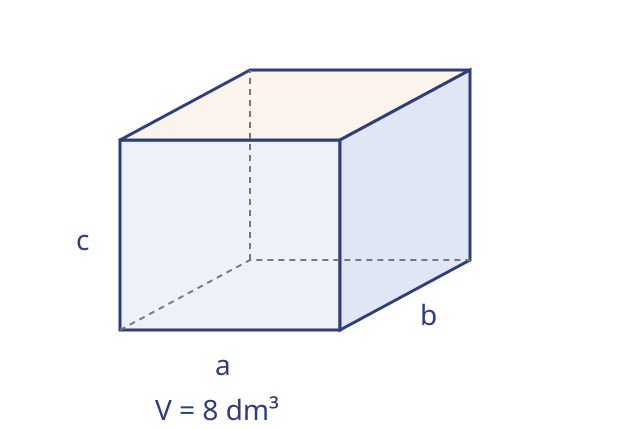
Ví dụ quy hoạch hình học đầu tiên mở bằng một quyết định thiết kế, trước khi có ký hiệu. Nhu cầu là chứa được một lượng hàng cố định với ít vật liệu nhất.
Dung tích $8\,\mathrm{dm}^3$ là yêu cầu cho trước; ba kích thước chiều dài, chiều rộng và chiều cao là quyết định. Hai hộp cùng dung tích có thể cần lượng vật liệu khác nhau, nên hình dạng hộp ảnh hưởng tới chi phí. Mô hình bỏ qua độ dày, mép ghép và phần hao hụt khi cắt, và giả thiết giá trên một đơn vị diện tích như nhau ở cả sáu mặt. Với giả thiết đó, chi phí tỷ lệ với diện tích bề mặt, nên làm nhỏ chi phí tương đương làm nhỏ diện tích. Hình vẽ một hộp kín với ba cạnh $a,b,c$ cần chọn.
Lấy 1 dm làm đơn vị chiều dài. Các ký hiệu $a,b,c$ là giá trị số của kích thước theo đơn vị đó; nhờ vậy về sau có thể lấy logarit của các số không thứ nguyên. Đầu ra cần báo cáo vẫn là ba kích thước thật theo dm và diện tích theo $\mathrm{dm}^2$. Ví dụ và hình tự xây dựng theo khung quy hoạch hình học trong Boyd và Vandenberghe (2004), Convex Optimization , §4.5.
Diện tích sáu mặt và thể tích đều là tích của các kích thước; mô hình thiết kế hộp viết hai đại lượng này thành mục tiêu và ràng buộc.
Mô hình thiết kế hộp
Biến quyết định: $a,b,c>0$, theo đơn vị chiều dài $1\,\mathrm{dm}$.
$$\begin{aligned}
\min_{a,b,c>0}\;&S(a,b,c)=2(ab+ac+bc)\\
\text{với}\quad&abc=8.
\end{aligned}$$
Tích kích thước xuất hiện ở cả mục tiêu và ràng buộc.
Yêu cầu thiết kế được chuyển thành mô hình tối ưu; câu hỏi đặt ra là mô hình có lồi theo ba kích thước hay không.
Biến quyết định là $a,b,c>0$ theo đơn vị 1 dm. Hộp có hai mặt diện tích $ab$, hai mặt $ac$ và hai mặt $bc$, nên diện tích bề mặt là $S(a,b,c)=2(ab+ac+bc)$. Yêu cầu dung tích là $abc=8$. Hai ứng viên trên trang đều có thể tích 8. Hộp $(1,2,4)$ có $ab=2$, $ac=4$, $bc=8$, nên $S=2\cdot14=28$. Hộp $(2,2,2)$ có ba tích bằng 4, nên $S=24$. Thử như vậy gợi ý rằng hộp cân đối hơn tốn ít vật liệu hơn, nhưng chưa chứng minh được ứng viên nào tối ưu.
Mô hình không lồi theo biến gốc. Hai điểm $(1,2,4)$ và $(4,2,1)$ cùng khả thi, nhưng trung điểm $(5/2,2,5/2)$ có tích $25/2\ne8$, nên tập khả thi không lồi. Hàm $S$ cũng không lồi: Hessian của $S$ có đường chéo bằng 0 và mọi phần tử ngoài đường chéo bằng 2, với các trị riêng $4,-2,-2$. Ô kết luận chỉ ra nguồn gốc của khó khăn: tích các kích thước xuất hiện ở cả mục tiêu lẫn ràng buộc. Yêu cầu thể tích và chi phí được giữ nguyên; chỉ cách biểu diễn tích các kích thước sẽ thay đổi. Nguồn: mô hình tự xây dựng theo Boyd và Vandenberghe (2004), §4.5.
Hai biểu thức $abc$ và $ab+ac+bc$ là mẫu của hai lớp hàm, đơn thức và tổng đơn thức dương, mà quy hoạch hình học dựa vào.
Đơn thức và tổng đơn thức dương
Miền $x\in\mathbb R_{++}^n$: mọi thành phần $x_i>0$.
$$m(x)=c\prod_{i=1}^n x_i^{\alpha_i},
\qquad c>0,\quad\alpha_i\in\mathbb R.$$
Ví dụ: $2x_1^{-1}x_2^{1/2}$ là một đơn thức.
$$f(x)=\sum_{k=1}^{K}c_k\prod_{i=1}^n x_i^{\alpha_{ik}},
\qquad c_k>0.$$
Tổng đơn thức dương (posynomial): tổng hữu hạn các đơn thức.
Mô hình hộp chứa tích các kích thước và tổng của các tích đó. Hai lớp hàm chứa các biểu thức ấy có tên riêng, kể cả khi số mũ âm hoặc không nguyên.
Miền là $\mathbb R_{++}^n$, tập các vectơ có mọi thành phần dương. Một đơn thức (monomial) có dạng $m(x)=c\prod_{i=1}^nx_i^{\alpha_i}$ với hệ số $c>0$ và số mũ thực $\alpha_i$. Định nghĩa này rộng hơn đơn thức đại số quen thuộc: số mũ có thể âm hoặc phân số, nhưng hệ số phải dương và biến phải dương. Ví dụ trên trang $2x_1^{-1}x_2^{1/2}$ có $c=2$, $\alpha=(-1,1/2)$. Một tổng đơn thức dương (posynomial) là tổng hữu hạn $K$ đơn thức, $f(x)=\sum_{k=1}^Kc_k\prod_ix_i^{\alpha_{ik}}$ với mọi $c_k>0$; chẳng hạn $x_1+2x_2/x_1$ là tổng hai đơn thức. Ở đây $n,K$ là số nguyên dương, còn $c_k$ và $\alpha_{ik}$ là dữ liệu.
Trong mô hình hộp, $abc/8$ là đơn thức với hệ số $1/8$ và số mũ $(1,1,1)$ theo $(a,b,c)$; diện tích $2ab+2ac+2bc$ là tổng ba đơn thức dương. Tích và thương của hai đơn thức là đơn thức; tổng và tích của hai tổng đơn thức dương là tổng đơn thức dương. Tổng đơn thức dương không đồng nghĩa với một hàm nhận giá trị dương: điều kiện đặt trên các hệ số của biểu diễn, mọi hệ số phải dương. Các số hạng có hệ số 0 được bỏ đi. Từ đây dùng nhất quán tên tổng đơn thức dương. Nguồn: Boyd và Vandenberghe (2004), Convex Optimization , §4.5.1, tr. 160–161.
Với hai lớp hàm này, dạng chuẩn của quy hoạch hình học quy định hàm nào được đặt ở mục tiêu, ở bất đẳng thức và ở đẳng thức.
Dạng chuẩn của quy hoạch hình học
$$\begin{aligned}
\min_{x\in\mathbb R_{++}^n}\;&f_0(x)\\
\text{với}\quad&f_i(x)\le1,\quad i=1,\ldots,m,\\
&h_j(x)=1,\quad j=1,\ldots,p.
\end{aligned}$$
$f_0,\ldots,f_m$: tổng đơn thức dương; $h_1,\ldots,h_p$: đơn thức.
Dạng chuẩn này không nhất thiết lồi theo biến $x$.
Đơn thức và tổng đơn thức dương đã được định nghĩa. Trang này quy định vị trí của từng lớp hàm trong một bài toán quy hoạch hình học ở dạng chuẩn.
Biến $x\in\mathbb R_{++}^n$ là biến quyết định; các hàm là dữ liệu đã biết. Mục tiêu $f_0$ và các vế trái $f_1,\ldots,f_m$ của bất đẳng thức là tổng đơn thức dương; các vế trái $h_1,\ldots,h_p$ của đẳng thức là đơn thức. Vế phải bằng 1 là quy ước chuẩn hóa, để sau khi lấy logarit vế phải trở thành 0. Số bất đẳng thức $m$ hoặc số đẳng thức $p$ có thể bằng 0. Điều kiện biến dương là thiết yếu, vì phép đổi biến logarit chỉ xác định trên miền dương.
Bài toán hộp có mục tiêu $S$ đúng lớp; chuẩn hóa đẳng thức $abc=8$ thành $abc/8=1$ là đủ đưa về dạng GP với $m=0$, $p=1$. Ô kết luận nêu giới hạn của dạng chuẩn: thuộc dạng GP không có nghĩa là lồi theo $x$. Bài hộp vừa thuộc dạng GP vừa không lồi theo kích thước, như trang trước đã chứng minh. Một số GP vốn đã lồi theo biến gốc, nhưng nói chung dạng chuẩn GP cần phép đổi biến mới chứng nhận được tính lồi. Nguồn: Boyd và Vandenberghe (2004), Convex Optimization , §4.5.2, công thức (4.43), tr. 161.
Các mô hình có vế phải khác 1, đẳng thức giữa hai đơn thức hoặc mục tiêu cực đại cần được đưa về dạng $f_i\le1$, $h_j=1$ bằng phép chia cho đơn thức và phép đảo mục tiêu.
Cải dạng về quy hoạch hình học
$f$: tổng đơn thức dương; $g,h,h_1,h_2$: đơn thức.
$$\begin{aligned}
f(x)\le g(x)&\iff f(x)/g(x)\le1,\\
h_1(x)=h_2(x)&\iff h_1(x)/h_2(x)=1.
\end{aligned}$$
$$\max_x h(x)\quad\longleftrightarrow\quad\min_x h(x)^{-1}.$$
Chia cho một đơn thức dương giữ đúng cấu trúc cần có.
Dạng chuẩn đòi vế phải bằng 1 và mục tiêu cực tiểu. Ba quy tắc đưa một mô hình gần đúng cấu trúc về đúng dạng chuẩn, mỗi quy tắc kèm điều kiện hợp lệ.
Mọi biến thuộc $\mathbb R_{++}^n$; $f$ là tổng đơn thức dương, còn $g,h,h_1,h_2$ là đơn thức. Quy tắc 1: $f(x)\le g(x)$ tương đương $f(x)/g(x)\le1$, vì $g(x)>0$ nên phép chia không đổi chiều bất đẳng thức, và phép biến đổi ngược là nhân lại. Mỗi số hạng của $f$ chia cho đơn thức $g$ vẫn là đơn thức, nên $f/g$ là tổng đơn thức dương. Quy tắc 2: $h_1=h_2$ tương đương $h_1/h_2=1$, và thương hai đơn thức là đơn thức. Quy tắc 3: hàm $s\mapsto1/s$ giảm chặt trên số dương, nên điểm cực đại của $h$ trùng điểm cực tiểu của $h^{-1}$ trên cùng miền, và $h^{-1}$ là đơn thức. Hai giá trị tối ưu là nghịch đảo của nhau, không bằng nhau.
Ô kết luận nêu điều kiện chung: chỉ chia cho một đơn thức dương mới giữ đúng cấu trúc. Chia cho một tổng đơn thức dương nói chung không cho tổng đơn thức dương, và quy tắc 3 không áp dụng cho cực đại một tổng đơn thức dương. Ba trường hợp thường gặp: với hộp, $abc=8$ thành $abc/8=1$; một giới hạn trên $f(x)\le M$ với $M>0$ thành $f(x)/M\le1$; một cận dưới đơn thức $h(x)\ge L>0$ thành $L/h(x)\le1$. Nguồn: Boyd và Vandenberghe (2004), Convex Optimization , §4.5.2, tr. 161.
Khi mô hình đã ở dạng chuẩn, phép đổi biến logarit biến mỗi đơn thức thành hàm mũ của một biểu thức affine.
Phép đổi biến logarit
Đặt $z_i=\log x_i$, tức $x_i=e^{z_i}$, với $i=1,\ldots,n$.
$$\log m(e^z)=\alpha^Tz+\log c.$$
$$\log f(e^z)=\log\left(\sum_{k=1}^{K}e^{\alpha_k^Tz+\beta_k}\right),
\quad\beta_k=\log c_k.$$
$c_ke^{\alpha_k^Tz}=e^{\alpha_k^Tz+\log c_k}$: hệ số dương được đưa vào số mũ.
Dạng chuẩn GP chưa lồi theo $x$. Phép đổi biến logarit biến tích các lũy thừa thành tổ hợp tuyến tính của biến mới.
Logarit là logarit tự nhiên; $z=\log x$ và $x=e^z$ áp dụng theo từng thành phần. Phép đổi là song ánh giữa $\mathbb R_{++}^n$ và $\mathbb R^n$, nên không mất và không thêm điểm khả thi. Với đơn thức, $m(e^z)=c\prod_ie^{\alpha_iz_i}=e^{\alpha^Tz+\log c}$, nên $\log m(e^z)=\alpha^Tz+\log c$ là hàm affine của $z$; vectơ $\alpha\in\mathbb R^n$ gom các số mũ. Với tổng đơn thức dương, mỗi số hạng $c_ke^{\alpha_k^Tz}$ viết thành $e^{\alpha_k^Tz+\beta_k}$ với $\beta_k=\log c_k$, như ô kết luận chỉ ra. Phép viết này cần $c_k>0$ để $\log c_k$ xác định, và đây là lý do định nghĩa đòi hệ số dương. Khi đó $\log f(e^z)$ là logarit của một tổng các hàm mũ của biểu thức affine.
Logarit của một tổng không bằng tổng các logarit, nên $\log f(e^z)$ không affine khi $f$ có từ hai số hạng với vectơ số mũ khác nhau. Mọi hàm trong dạng chuẩn nhận giá trị dương và logarit tăng chặt, nên $f_i(x)\le1$ tương đương $\log f_i(e^z)\le0$, còn $h_j(x)=1$ tương đương $\log h_j(e^z)=0$, một đẳng thức affine. Tính lồi của logarit tổng hàm mũ cần chứng minh riêng; nó không suy ra từ việc logarit là hàm tăng. Nguồn: Boyd và Vandenberghe (2004), Convex Optimization , §4.5.3, tr. 162–163.
Ghép các hàm sau đổi biến lại cho dạng lồi của quy hoạch hình học; phần còn thiếu là chứng minh logarit tổng hàm mũ lồi và cách lấy lại nghiệm gốc.
Dạng lồi của quy hoạch hình học
$F_i(z)=\log f_i(e^z)$: logarit tổng hàm mũ của các biểu thức affine.
$$\begin{aligned}
\min_{z\in\mathbb R^n}\;&F_0(z)\\
\text{với}\quad&F_i(z)\le0,\quad i=1,\ldots,m,\\
&\gamma_j^Tz+\delta_j=0,\quad j=1,\ldots,p.
\end{aligned}$$
$F_i$ lồi; đẳng thức affine. Khôi phục $x^\star=e^{z^\star}$.
Sau phép đổi biến, mục tiêu và bất đẳng thức là logarit tổng hàm mũ, còn đẳng thức là affine. Trang này viết bài toán theo $z$, chứng minh nó lồi và nêu cách lấy lại nghiệm theo $x$.
Với $i=0,\ldots,m$, $F_i(z)=\log\sum_{k=1}^{K_i}\exp(\alpha_{ik}^Tz+\beta_{ik})$, trong đó $\alpha_{ik}\in\mathbb R^n$ và $\beta_{ik}\in\mathbb R$ là dữ liệu. Nếu $h_j(x)=d_j\prod_\ell x_\ell^{\gamma_{j\ell}}$ với $d_j>0$ thì $\log h_j(e^z)=\gamma_j^Tz+\delta_j$, với $\gamma_j\in\mathbb R^n$ và $\delta_j=\log d_j$. Chứng nhận tính lồi của một hàm $F$ dạng này: đặt $\pi_k=e^{\alpha_k^Tz+\beta_k}/\sum_\ell e^{\alpha_\ell^Tz+\beta_\ell}$, các trọng số không âm có tổng bằng 1, và $\bar\alpha=\sum_k\pi_k\alpha_k$. Tính trực tiếp được $\nabla F(z)=\sum_ke^{\alpha_k^Tz+\beta_k}\alpha_k\big/\sum_\ell e^{\alpha_\ell^Tz+\beta_\ell}=\bar\alpha$ và $$\nabla^2F=\sum_k\pi_k(\alpha_k-\bar\alpha)(\alpha_k-\bar\alpha)^T\succeq0,$$ vì với mọi $v$, $v^T\nabla^2Fv=\sum_k\pi_k\left[v^T(\alpha_k-\bar\alpha)\right]^2\ge0$. Hessian có dạng một ma trận hiệp phương sai của các vectơ $\alpha_k$ với trọng số $\pi_k$. Logarit của một hàm lồi bất kỳ không nhất thiết lồi; kết luận ở đây dựa trên cấu trúc tổng hàm mũ.
Mỗi điểm khả thi $x$ cho điểm khả thi $z=\log x$ và ngược lại. Logarit tăng chặt nên thứ tự các giá trị mục tiêu được giữ. Vì vậy, nếu nghiệm tối ưu tồn tại, $x^\star=e^{z^\star}$ là nghiệm gốc và $f_0(x^\star)=e^{F_0(z^\star)}$. Hai giá trị mục tiêu khác nhau, và cải dạng không tự bảo đảm nghiệm tồn tại. Nếu mọi hàm chỉ có một đơn thức thì mọi $F_i$ affine và dạng sau đổi biến là một LP. Nguồn: Boyd và Vandenberghe (2004), §4.5.3, tr. 162–163; chứng nhận Hessian áp dụng lập luận về logarit tổng hàm mũ ở §3.1.5.
Khung tổng quát đã đủ ba bước; bài thiết kế hộp được đưa qua đúng ba bước đó trước khi tìm nghiệm.
Cải dạng bài toán thiết kế hộp
$A=\log a$, $B=\log b$, $C=\log c$.
$$\begin{aligned}
\min_{A,B,C\in\mathbb R}\;&\log\left(2e^{A+B}+2e^{A+C}+2e^{B+C}\right)\\
\text{với}\quad&A+B+C=\log8.
\end{aligned}$$
Mục tiêu lồi; yêu cầu thể tích trở thành một mặt phẳng.
Khôi phục kích thước: $(a,b,c)=(e^A,e^B,e^C)$.
Khung vừa chứng minh được áp dụng vào đúng mô hình hộp ban đầu, cho bài toán lồi tương đương trước khi tìm nghiệm.
Xuất phát từ dạng chuẩn: mục tiêu $S=2ab+2ac+2bc$ và đẳng thức $abc/8=1$. Đặt $A=\log a$, $B=\log b$, $C=\log c$. Mỗi số hạng diện tích trở thành $2e^{A+B}=e^{A+B+\log2}$, tương tự cho hai số hạng còn lại, nên mục tiêu sau khi lấy logarit là $\log(2e^{A+B}+2e^{A+C}+2e^{B+C})$, thuộc lớp logarit tổng hàm mũ vừa chứng nhận lồi. Lấy logarit không đổi điểm cực tiểu, vì diện tích luôn dương và logarit tăng chặt. Đẳng thức thể tích cho $A+B+C-\log8=0$, một mặt phẳng trong không gian $(A,B,C)$, nên tập khả thi mới lồi.
Bước cải dạng không thay yêu cầu thể tích và không xấp xỉ diện tích. Hai chiều khả thi được bảo đảm bởi phép đổi song ánh, và kích thước thật được khôi phục bằng $(a,b,c)=(e^A,e^B,e^C)$ như ô kết luận ghi. Diện tích thật theo $\mathrm{dm}^2$ bằng hàm mũ của giá trị mục tiêu mới. Một bài toán không lồi theo kích thước đã được biểu diễn thành bài toán lồi theo logarit kích thước. Nguồn: phép áp dụng tự xây dựng từ Boyd và Vandenberghe (2004), §4.5.3.
Bài toán lồi theo $(A,B,C)$ đã sẵn sàng; nghiệm của nó được đọc thành kích thước hộp và kiểm lại bằng một cận dưới độc lập.
Kích thước hộp tối ưu
$$A^\star=B^\star=C^\star=\log2.$$
Hộp lập phương cạnh $2\,\mathrm{dm}$.
$$V=8\,\mathrm{dm}^3,\qquad S_{\min}=24\,\mathrm{dm}^2.$$
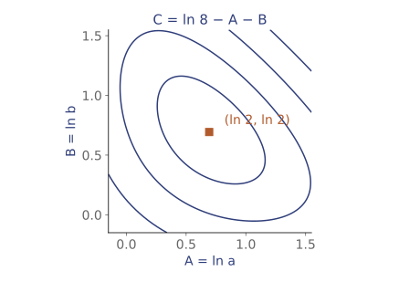
Đồng mức $\log S$ sau khi khử $C$ bằng ràng buộc thể tích.
Bài hộp đã có dạng lồi tương đương. Trang này đọc nghiệm của dạng lồi thành kích thước thật và kiểm tra tính tối ưu bằng một lập luận không dùng đổi biến.
Nghiệm của bài theo logarit là $A^\star=B^\star=C^\star=\log2$; lấy hàm mũ được hộp lập phương cạnh 2 dm, thể tích $8\,\mathrm{dm}^3$ và diện tích nhỏ nhất $24\,\mathrm{dm}^2$. Giá trị tối ưu của bài theo logarit là $\log24$; phải lấy hàm mũ mới được diện tích. So với hộp $(1,2,4)$, cùng dung tích nhưng diện tích giảm từ 28 xuống $24\,\mathrm{dm}^2$. Hình vẽ trên mặt phẳng $(A,B)$ sau khi khử $C=\log8-A-B$ bằng ràng buộc thể tích; các đường đồng mức của $\log S$ là những đường cong khép kín bao quanh điểm $A=B=\log2$, tại đó $C=\log2$.
Nghiệm được kiểm độc lập bằng bất đẳng thức trung bình cộng và trung bình nhân cho ba số dương $ab,ac,bc$: $$ab+ac+bc\ge3\sqrt[3]{(ab)(ac)(bc)}=3(abc)^{2/3}=12.$$ Dấu bằng khi $ab=ac=bc$, tương đương $a=b=c$ vì các kích thước dương. Vậy $S\ge24$ và hộp lập phương đạt cận này. Câu hỏi: nếu yêu cầu thể tích ít nhất $8\,\mathrm{dm}^3$ thì sao? Ràng buộc $abc\ge8$ viết thành $8/(abc)\le1$, vẫn là GP. Cùng bất đẳng thức cho $S\ge6(abc)^{2/3}\ge6\cdot4=24$, dấu bằng khi $a=b=c$ và $abc=8$, nên nghiệm tối ưu vẫn đạt đúng thể tích 8 với cạnh 2. Với thể tích cố định $V>0$ nói chung, cạnh tối ưu là $V^{1/3}$ và diện tích nhỏ nhất là $6V^{2/3}$, theo cùng hệ đơn vị. Mô hình, số liệu và hình tự xây dựng theo khung Boyd và Vandenberghe (2004), §4.5; kiểm số độc lập bằng bài toán lồi theo biến logarit.
Bài hộp có mục tiêu và ràng buộc là tích các biến; ví dụ phân bổ công suất đưa vào tỷ số giữa các biến và một mục tiêu cực đại giá trị nhỏ nhất.
Phân bổ công suất cho hai đường truyền
Hai đường truyền dùng chung một kênh vô tuyến.
Tăng công suất vừa tăng tín hiệu có ích, vừa gây nhiễu cho đường còn lại.
Chọn cách chia công suất để cải thiện đường truyền yếu nhất.
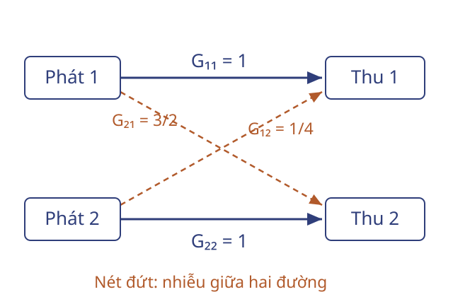
Ví dụ thứ hai của phần chuyển từ tích sang tỷ số của các biến dương. Tình huống được nêu trước khi đặt công thức.
Hai đường truyền dùng chung một kênh vô tuyến, mỗi đường gồm một bộ phát và một bộ thu. Tăng công suất của một bộ phát làm tín hiệu có ích tại bộ thu của nó mạnh lên, nhưng đồng thời gây nhiễu cho bộ thu của đường còn lại. Vì vậy không thể đánh giá công suất của từng đường tách khỏi đường kia. Mục tiêu là cải thiện đường truyền yếu hơn, tức làm lớn nhất chất lượng của đường kém nhất.
Trên hình, $G_{ij}$ là hệ số truyền từ bộ phát $j$ tới bộ thu $i$. Đường liền là tín hiệu chính, với $G_{11}=G_{22}=1$; đường đứt là nhiễu chéo, với $G_{12}=1/4$ từ bộ phát 2 tới bộ thu 1 và $G_{21}=3/2$ từ bộ phát 1 tới bộ thu 2. Tạp âm nền $\sigma_i$ tại mỗi bộ thu bằng 1 và tổng công suất không quá 6, theo đơn vị chuẩn hóa. Mọi đại lượng liên tục. Do nhiễu chéo không đối xứng, chia đều ngân sách chưa chắc cho hai đường chất lượng cân bằng. Bối cảnh phỏng theo Bài tập 4.20, Boyd và Vandenberghe (2004), tr. 196. Dữ liệu và hình tự xây dựng, không phải kết quả đo hay tham số thiết bị thực; phép cải dạng GP là suy diễn của ví dụ này.
Chất lượng mỗi đường được đo bằng tỷ số tín hiệu trên nhiễu và tạp âm; mô hình chất lượng đường truyền viết hai tỷ số đó theo $p_1,p_2$.
Mô hình chất lượng đường truyền
Tỷ số tín hiệu trên nhiễu và tạp âm (SINR):
Mẫu số gồm tạp âm nền bằng 1 và nhiễu từ đường còn lại.
$$S_1(p)=\frac{p_1}{1+p_2/4},\qquad
S_2(p)=\frac{p_2}{1+3p_1/2}.$$
$$\begin{aligned}
\max_{p_1,p_2>0}\;&\min\{S_1(p),S_2(p)\}\\
\text{với}\quad&p_1+p_2\le6.
\end{aligned}$$
Chia đều $(3,3)$: chất lượng yếu nhất chỉ đạt $6/11$.
Tình huống hai đường truyền đã xác định quyết định và dữ liệu. Trang này lập mô hình định lượng: chất lượng mỗi đường và mục tiêu bảo vệ đường yếu hơn.
Biến quyết định là hai công suất $p_1,p_2>0$; dữ liệu gồm $G=\begin{pmatrix}1&1/4\\3/2&1\end{pmatrix}$, tạp âm nền $\sigma_1=\sigma_2=1$ và ngân sách 6. Tỷ số tín hiệu trên nhiễu và tạp âm (signal-to-interference-plus-noise ratio, SINR) của đường $i$ có tử số là tín hiệu có ích $G_{ii}p_i$ và mẫu số là tạp âm nền cộng nhiễu từ bộ phát còn lại. Thay số được $S_1(p)=p_1/(1+p_2/4)$ và $S_2(p)=p_2/(1+3p_1/2)$; đây là đại lượng không thứ nguyên. Mục tiêu $\max\min\{S_1,S_2\}$ chọn công suất sao cho đường kém hơn tốt nhất có thể, với ràng buộc ngân sách $p_1+p_2\le6$.
Chia đều $(3,3)$ cho $S_1=3/(1+3/4)=12/7$ và $S_2=3/(1+9/2)=6/11$, nên chất lượng nhỏ nhất chỉ là $6/11$, như ô kết luận ghi. Đường 2 chịu nhiễu với hệ số $3/2$ nên kém hơn nhiều. Tăng riêng $p_2$ giúp đường 2 nhưng làm giảm $S_1$, vì $p_2$ nằm trong mẫu số của $S_1$. Đầu ra cần báo cáo là cách chia công suất và chất lượng nhỏ nhất đạt được, không phải giá trị của một mục tiêu đã biến đổi. Nguồn bối cảnh: Boyd và Vandenberghe (2004), Bài tập 4.20, tr. 196; các giá trị số tự xây dựng.
Mục tiêu cực đại của một giá trị nhỏ nhất chưa có dạng GP; một biến ngưỡng chung cho hai tỷ số đưa nó về các bất đẳng thức tổng đơn thức dương.
Cải dạng bài phân bổ công suất
Ngưỡng $t>0$: $t\le S_1(p)\iff t(1+p_2/4)\le p_1$; tương tự cho $S_2$.
$$\begin{aligned}
\min_{p_1,p_2,t>0}\;&t^{-1}\\
\text{với}\quad&tp_1^{-1}+\tfrac14tp_2p_1^{-1}\le1,\\
&tp_2^{-1}+\tfrac32tp_1p_2^{-1}\le1,\\
&(p_1+p_2)/6\le1.
\end{aligned}$$
Mục tiêu là đơn thức; mỗi bất đẳng thức là tổng đơn thức dương.
Mô hình max-min chưa thuộc dạng chuẩn GP: mục tiêu là cực đại của một giá trị nhỏ nhất, và mỗi tỷ số có mẫu là tổng. Trang này dùng một biến ngưỡng và các quy tắc chia cho đơn thức để đưa mô hình về dạng chuẩn.
Thêm biến $t>0$ đóng vai một ngưỡng chất lượng mà cả hai đường phải đạt. Ràng buộc $t\le S_1(p)=p_1/(1+p_2/4)$ tương đương $t(1+p_2/4)\le p_1$ vì mẫu dương; chia hai vế cho $p_1>0$ được $tp_1^{-1}+\tfrac14tp_2p_1^{-1}\le1$. Tương tự, $t\le S_2(p)$ thành $tp_2^{-1}+\tfrac32tp_1p_2^{-1}\le1$. Ngân sách chia cho 6 thành $(p_1+p_2)/6\le1$. Mục tiêu cực đại $t$ đổi thành cực tiểu đơn thức $t^{-1}$ theo quy tắc đảo mục tiêu. Mỗi vế trái là tổng đơn thức dương theo $(p_1,p_2,t)$, và mục tiêu là đơn thức, đúng như ô kết luận ghi.
Tương đương hai chiều: với mỗi $p$ khả thi, chọn $t=\min\{S_1(p),S_2(p)\}>0$ được một điểm khả thi của bài mới. Ngược lại, mỗi cặp $(p,t)$ khả thi có chất lượng nhỏ nhất của $p$ không dưới $t$. Tại tối ưu, ngưỡng phải bằng chất lượng nhỏ nhất, vì nếu không thì tăng được $t$. Do đó hai bài có cùng chất lượng tối ưu và khối $p$ là phương án gốc; giá trị tối ưu GP là nghịch đảo của chất lượng tối ưu. Về miền dương: nếu mô hình cho phép một $p_i=0$ thì chất lượng của đường đó bằng 0, trong khi có phương án dương đạt chất lượng dương; vì vậy giới hạn về biến dương không loại nghiệm tối ưu của ví dụ này. Lập luận đó riêng cho ví dụ, không tự đúng cho mọi bài toán. Nguồn: cải dạng do nhóm soạn tự xây dựng từ Boyd và Vandenberghe (2004), §4.5.2 và bối cảnh Bài tập 4.20.
Bài toán đã ở dạng chuẩn GP theo $(p_1,p_2,t)$; phép đổi biến logarit của khung tổng quát cho dạng lồi của bài phân bổ công suất.
Dạng lồi của bài phân bổ công suất
$z_1=\log p_1$, $z_2=\log p_2$, $\tau=\log t$.
$$\begin{aligned}
\min_{z_1,z_2,\tau\in\mathbb R}\;&-\tau\\
\text{với}\quad&\log\left(e^{\tau-z_1}+\tfrac14e^{\tau+z_2-z_1}\right)\le0,\\
&\log\left(e^{\tau-z_2}+\tfrac32e^{\tau+z_1-z_2}\right)\le0,\\
&\log\left(e^{z_1}+e^{z_2}\right)\le\log6.
\end{aligned}$$
Mục tiêu affine; các hàm bất đẳng thức là logarit tổng mũ lồi.
Phép đổi biến logarit được áp dụng cho dạng chuẩn GP của bài công suất; từng ràng buộc sau đổi biến được viết ra để có thể kiểm lại.
Đặt $p_1=e^{z_1}$, $p_2=e^{z_2}$, $t=e^\tau$, rồi lấy logarit mục tiêu và hai vế dương của mỗi bất đẳng thức. Mục tiêu $\log t^{-1}=-\tau$ là affine. Số hạng $tp_1^{-1}$ thành $e^{\tau-z_1}$, số hạng $\tfrac14tp_2p_1^{-1}$ thành $\tfrac14e^{\tau+z_2-z_1}$, nên ràng buộc của đường 1 là $\log(e^{\tau-z_1}+\tfrac14e^{\tau+z_2-z_1})\le0$; ràng buộc của đường 2 lập tương tự. Với ngân sách, $\log((e^{z_1}+e^{z_2})/6)\le0$ được viết tương đương bằng cách chuyển $\log6$ sang vế phải. Các hệ số dương $1/4$ và $3/2$ được đưa vào số mũ qua $\log(1/4)$ và $\log(3/2)$, nên mọi vế trái thuộc lớp logarit tổng hàm mũ đã chứng minh lồi.
Bài toán thu được lồi nhưng không phải LP, vì các bất đẳng thức không affine. Ánh xạ song ánh giữ các điểm khả thi và thứ tự giá trị mục tiêu. Khôi phục bằng $p_i^\star=e^{z_i^\star}$ và $t^\star=e^{\tau^\star}$. Nếu giá trị nhỏ nhất của bài theo logarit là $v^\star=-\tau^\star$ thì chất lượng gốc là $e^{-v^\star}$, không phải $v^\star$. Nguồn: phép áp dụng tự xây dựng từ Boyd và Vandenberghe (2004), §4.5.3, tr. 162–163.
Nghiệm của bài lồi này được chuyển về công suất thật, kiểm lại trong mô hình SINR ban đầu và so với phương án chia đều.
Nghiệm phân bổ công suất
$$p^\star=(2,4),\qquad t^\star=1.$$
Hai đường đạt cùng SINR bằng 1.
Chia đều $(3,3)$ chỉ đạt chất lượng nhỏ nhất $6/11$.
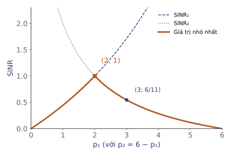
Cùng ngân sách 6, tăng công suất cho đường chịu nhiễu mạnh hơn.
Dạng lồi của bài công suất đã sẵn sàng; nghiệm của nó cần được đọc thành cách chia công suất, chứng minh tối ưu bằng lập luận trực tiếp và so với phương án chia đều.
Nghiệm của bài theo logarit là $(z_1,z_2,\tau)=(\log2,\log4,0)$; lấy hàm mũ được $p^\star=(2,4)$ và $t^\star=1$. Mục tiêu GP $t^{-1}$ bằng 1, mục tiêu theo logarit bằng 0. Thay vào mô hình gốc: $S_1=2/(1+4/4)=1$ và $S_2=4/(1+3)=1$, nên hai đường đạt cùng SINR bằng 1, so với $6/11$ khi chia đều. Chứng nhận tối ưu: để đạt ngưỡng 1 cần $p_1\ge1+p_2/4$ và $p_2\ge1+3p_1/2$. Thế bất đẳng thức thứ hai vào thứ nhất cho $\tfrac58p_1\ge\tfrac54$, tức $p_1\ge2$, rồi $p_2\ge4$; ngân sách 6 buộc $p=(2,4)$. Nếu ngưỡng lớn hơn 1, hai bất đẳng thức trên đều chặt, cùng phép thế cho $p_1>2$ và $p_2>4$, mâu thuẫn với ngân sách. Vậy không phương án nào đạt chất lượng lớn hơn 1.
Hình vẽ $S_1$, $S_2$ và giá trị nhỏ nhất của chúng theo $p_1$ trên đường $p_2=6-p_1$; giá trị nhỏ nhất đạt cực đại 1 tại $p_1=2$. Chỉ xét đường dùng hết ngân sách là hợp lệ: nếu còn ngân sách và hai công suất dương, nhân cả hai với cùng một hệ số lớn hơn 1 làm mỗi SINR tăng, vì tạp âm nền dương. Hai đường SINR riêng được cắt ở mức cao để đường giá trị nhỏ nhất rõ hơn; việc cắt không đổi vị trí cực đại. Nguồn bối cảnh: Boyd và Vandenberghe (2004), Bài tập 4.20, tr. 196; dữ liệu, cải dạng, chứng nhận và hình do nhóm soạn tự xây dựng.
Cả hai ví dụ đều thỏa điều kiện cấu trúc của GP; ba biến thể nhận dạng cuối phần xét những trường hợp các điều kiện đó bị vi phạm.
Nhận dạng và giới hạn cải dạng
Câu hỏi: Hai câu đầu xét $x,y>0$.
1. $x+y\le xy$: đưa về dạng chuẩn. Đảo chiều bất đẳng thức thì sao?
2. $x+y=1$: có là đẳng thức đơn thức không? Có lồi theo $(x,y)$ không?
3. $\min x$ với $0\le x\le1$: đổi $x=e^z$ có giữ nghiệm tối ưu không?
Hai ví dụ của phần đều thỏa các điều kiện của GP. Ba câu hỏi kiểm tra giới hạn của phép cải dạng khi đổi chiều bất đẳng thức, dùng đẳng thức không phải đơn thức hoặc cho biến chạm 0. Hai câu đầu xét $x,y>0$, câu thứ ba xét biên 0 theo đúng đề.
Câu 1: chia $x+y\le xy$ cho $xy>0$ được $1/x+1/y\le1$, đúng dạng GP. Đảo chiều cho $x+y\ge xy$, tức $1/x+1/y\ge1$: một tổng đơn thức dương lớn hơn hoặc bằng 1, không phải chiều của dạng chuẩn GP, nên ràng buộc nằm ngoài dạng GP và phải phân tích riêng. Phân tích cụ thể cho thấy tập này không lồi theo cả hai cách biểu diễn. Theo $(x,y)$: $(1,4)$ và $(4,1)$ thỏa $x+y\ge xy$, nhưng trung điểm $(2{,}5;\,2{,}5)$ cho $5<6{,}25$. Theo $z=\log x$: $(1,100)$ và $(100,1)$ khả thi, nhưng điểm ứng với trung điểm theo $z$ là trung bình nhân $(10,10)$, cho $20<100$. Câu 2: $x+y$ là tổng hai đơn thức, không phải một đơn thức, nên $x+y=1$ không phải đẳng thức GP chuẩn; sau đổi biến, $\log(e^{z_1}+e^{z_2})=0$ không affine. Tuy vậy $x+y=1$ là đẳng thức affine theo biến gốc và cho tập khả thi lồi trên miền dương. Câu này tách cấu trúc GP khỏi khái niệm tính lồi.
Câu 3: nghiệm của $\min x$ với $0\le x\le1$ là $x^\star=0$. Phép đổi $x=e^z$ chỉ biểu diễn $x>0$, nên bài mới có cận dưới 0 khi $z\to-\infty$ nhưng không có nghiệm đạt cận. Do đó không được bỏ điều kiện về miền khi khẳng định tương đương. Ba câu cho thấy mỗi phép cải dạng đi kèm điều kiện cấu trúc, điều kiện miền và ánh xạ nghiệm. Nguồn: biến thể tự xây dựng từ Boyd và Vandenberghe (2004), §4.5.
Khi bài toán không đưa được về một lớp lồi bằng các phép cải dạng đã học, phần 5 xét hai lựa chọn khác: thay hàm mục tiêu hoặc mở rộng tập khả thi, rồi đánh giá nghiệm thu được theo bài toán gốc.
5
Phần 4 cho thấy quy hoạch hình học được cải dạng tương đương khi thỏa các điều kiện cấu trúc, và trang nhận dạng cuối phần chỉ ra những trường hợp các điều kiện đó bị vi phạm. Phần 5 xét bài toán không lồi và không đưa được về một lớp lồi bằng các phép cải dạng đã học. Khi đó còn hai lựa chọn: thay hàm mục tiêu bằng một hàm lồi khác, hoặc mở rộng tập khả thi thành một tập lồi.
Lựa chọn thứ nhất được minh họa bằng bài chọn ngưỡng phân loại ảnh, trong đó số lỗi phân loại được thay bằng hàm mất mát bản lề. Lựa chọn thứ hai được minh họa bằng bài mua các gói ảnh đã gán nhãn, trong đó điều kiện mua hoặc không mua được nới thành một khoảng liên tục. Mỗi lựa chọn giữ lại một loại bảo đảm khác nhau và làm mất những bảo đảm khác; nghiệm thu được luôn phải được đánh giá lại theo bài toán gốc. Nguồn: Boyd và Vandenberghe (2004), Convex Optimization , §8.6.1 và Bài tập 4.15.
Đối tượng đầu tiên là hàm đếm lỗi của bộ phân loại theo ngưỡng $\theta$, một hàm bậc thang không lồi.
Phân loại bằng ngưỡng
Chọn ngưỡng $\theta$ cho bộ phân loại ảnh, chỉ dùng một đặc trưng chuẩn hóa $u$.
$u_i$ $y_i$ Ý nghĩa $-2$ $-1$ nhóm còn lại $-1$ $+1$ nhóm cần tìm $1$ $-1$ nhóm còn lại $2$ $+1$ nhóm cần tìm
Điểm số $s_\theta(u)=u-\theta$; dự đoán theo dấu điểm số.
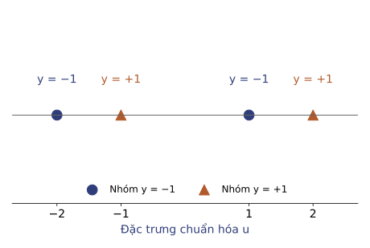
Dữ liệu minh họa: nhãn xen kẽ trên trục $u$.
Ví dụ thứ nhất của phần mở bằng một quyết định trong học máy: chọn ngưỡng cho bộ phân loại ảnh. Dữ liệu, quy tắc dự đoán và một nhận xét hình học cho thấy không ngưỡng nào phân loại đúng mọi điểm.
Bộ phân loại chỉ dùng một đặc trưng đã chuẩn hóa $u$. Nhãn $y=+1$ chỉ nhóm cần tìm, $y=-1$ chỉ nhóm còn lại. Bảng có bốn ảnh với $u=(-2,-1,1,2)$ và nhãn $y=(-1,+1,-1,+1)$; đây là dữ liệu minh họa tự xây dựng, không phải dữ liệu thực nghiệm. Điểm số $s_\theta(u)=u-\theta$ có hệ số của $u$ cố định bằng 1 để ví dụ dễ tính; biến quyết định duy nhất là ngưỡng $\theta\in\mathbb R$. Điểm số dương cho dự đoán nhóm cần tìm, điểm số âm cho dự đoán nhóm còn lại. Điểm số bằng 0 được tính là lỗi, tức xem như không quyết định.
Trên hình, bốn điểm nằm trên trục $u$ với nhãn xen kẽ $-1,+1,-1,+1$ từ trái sang phải. Một ngưỡng chia trục thành hai nửa: các điểm bên trái $\theta$ được dự đoán $-1$, các điểm bên phải được dự đoán $+1$. Với nhãn xen kẽ, không cách chia nào đặt đúng cả bốn điểm, nên số lỗi nhỏ nhất ít nhất là 1. Mục tiêu là giảm số lỗi trên dữ liệu đã gán nhãn; ví dụ không hứa hẹn gì về dữ liệu mới.
Số lỗi phụ thuộc vào ngưỡng theo những bước nhảy; mô hình giảm số lỗi viết đại lượng này thành một hàm của $\theta$.
Mô hình giảm số lỗi phân loại
Biên có dấu và hàm mất mát đếm lỗi.
$$r_i(\theta)=y_i(u_i-\theta),\qquad
\ell_{01}(r)=\begin{cases}1,&r\le0,\\0,&r>0.\end{cases}$$
$$\min_{\theta\in\mathbb R}\;\underbrace{\sum_{i=1}^{4}\ell_{01}\big(r_i(\theta)\big)}_{E(\theta)}.$$
$E$ là hàm bậc thang, không lồi; một ngưỡng không phân loại đúng cả bốn điểm.
Trang này biến yêu cầu giảm số lỗi thành một bài toán tối ưu, để có một tiêu chí gốc rõ ràng mà mọi phương pháp sau phải được đánh giá theo.
Biên có dấu $r_i(\theta)=y_i(u_i-\theta)$ dương khi dấu của điểm số trùng nhãn, tức điểm được phân loại đúng; $r_i\le0$ là lỗi, kể cả $r_i=0$ theo quy ước đã nêu. Hàm mất mát đếm lỗi $\ell_{01}$ bằng 1 khi $r\le0$ và bằng 0 khi $r>0$; tổng $E(\theta)=\sum_{i=1}^4\ell_{01}(r_i(\theta))$ là số lỗi trên bốn điểm. Ví dụ: $\theta=-1{,}5$ chỉ phân loại sai điểm $u=1$, nên $E=1$; $\theta=0$ phân loại sai hai điểm $u=-1$ và $u=1$, nên $E=2$. Xét từng khoảng giữa các điểm dữ liệu, $E=1$ khi $\theta\in(-2,-1)$ hoặc $\theta\in(1,2)$, và $E=2$ trên các khoảng còn lại. Giá trị tối ưu là 1. Không dùng điểm trên biên để so sánh hai phương án, vì quy ước đã tính biên là lỗi.
Ô kết luận nêu hai tính chất. $E$ là hàm bậc thang, chỉ nhận giá trị nguyên. $E$ không lồi: $E(-1{,}5)=E(1{,}5)=1$ nhưng tại trung điểm $E(0)=2>1$, vi phạm bất đẳng thức định nghĩa hàm lồi. Do đó bài toán $\min_\theta E(\theta)$ không lồi. Tính không lồi này không sửa được bằng đổi biến: một hàm lồi xác định trên $\mathbb R$ và bị chặn phải là hằng, còn $E\circ\varphi$ nhận cả hai giá trị 1 và 2 với mọi song ánh $\varphi$ của $\mathbb R$, nên không lồi. Ví dụ nhỏ giải được bằng cách xét từng khoảng ngưỡng, nhưng cách liệt kê này khó mở rộng cho mô hình nhiều đặc trưng.
Vì $E$ không đưa được về một lớp lồi bằng các phép cải dạng đã học, hướng xử lý là thay $\ell_{01}$ bằng một hàm lồi luôn nằm trên nó.
Hàm mất mát bản lề
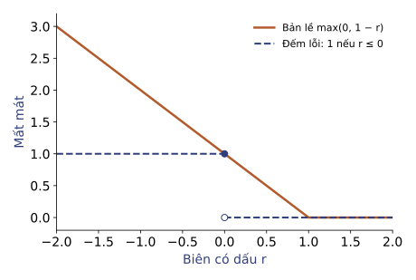
Hàm bản lề chặn trên mất mát đếm lỗi.
$$\ell_h(r)=\max(0,1-r)$$
Giá trị lớn nhất của hai hàm affine nên lồi.
$$\ell_{01}(r)\le\ell_h(r),\quad r\in\mathbb R.$$
$H(\theta)=\sum_i\ell_h(y_i(u_i-\theta))$ lồi theo $\theta$.
Hàm đếm lỗi không lồi và không đưa được về một lớp lồi bằng các phép cải dạng đã học. Hàm mất mát bản lề là một hàm thay thế lồi chặn trên hàm đếm lỗi tại mọi điểm.
Hàm mất mát bản lề (hinge loss) $\ell_h(r)=\max(0,1-r)$ là giá trị lớn nhất của hai hàm affine $0$ và $1-r$, nên lồi. Bất đẳng thức $\ell_{01}(r)\le\ell_h(r)$ đúng với mọi $r$: khi $r\le0$, $\ell_{01}=1\le1-r\le\ell_h(r)$; khi $r>0$, $\ell_{01}=0\le\ell_h(r)$. Trên hình, trục hoành là biên $r$; hàm đếm lỗi là bậc thang bằng 1 với $r\le0$ và bằng 0 với $r>0$; hàm bản lề là đường gấp khúc, giảm tuyến tính đến 0 tại $r=1$ rồi giữ bằng 0. Đường bản lề luôn nằm trên bậc thang; tại $r=0$ hai hàm cùng bằng 1, phù hợp quy ước tính điểm trên ngưỡng là lỗi. Hàm bản lề còn phạt cả các điểm phân loại đúng nhưng biên nhỏ, $0<r<1$.
Thay từng số hạng trong $E$ được $H(\theta)=\sum_i\ell_h(y_i(u_i-\theta))$. Mỗi số hạng là hợp của hàm lồi $\ell_h$ với hàm affine $\theta\mapsto y_i(u_i-\theta)$, nên lồi theo $\theta$; tổng các hàm lồi là lồi. Bài toán $\min_\theta H(\theta)$ là bài toán lồi một biến. Từ bất đẳng thức từng điểm suy ra $E(\theta)\le H(\theta)$ với mọi $\theta$. Giá trị $H(\theta)$ không phải số lỗi, và quan hệ giữa nghiệm của hai bài toán còn phải kiểm tra bằng số. Nguồn: Boyd và Vandenberghe (2004), Convex Optimization , §8.6.1, tr. 425–427.
Thay $E$ bằng $H$ là đổi mục tiêu chứ không phải cải dạng, nên cần xác định khi nào được phép đổi mục tiêu và phải kiểm chứng gì sau khi đổi.
Tư duy thiết kế phương pháp AI
Dự đoán tốt trên dữ liệu chưa biết
Tối ưu trên tập huấn luyện là phương tiện.
Cơ sở toán học
Nêu rõ giả thiết, bảo đảm và giới hạn.
Lập luận chặt chẽ
Lựa chọn linh hoạt
Dùng hàm thay thế, mô hình giản lược hoặc nghiệm gần đúng.
Tính toán hiệu quả
Kiểm chứng thực nghiệm
Đánh giá trên dữ liệu độc lập, đại diện cho bài toán.
Ước lượng khả năng tổng quát hóa
Bản sắc AI: kết hợp lập luận toán học, thiết kế thuật toán và kiểm chứng bằng dữ liệu.
Hàm bản lề $H$ lồi theo $\theta$, và $E(\theta)\le H(\theta)$ trên mọi mẫu dữ liệu, nhưng bất đẳng thức này không cho bảo đảm tổng quát hóa (generalization). Trang này đặt quyết định thay mất mát vào cách thiết kế một phương pháp AI: khi nào được thay mục tiêu và phải kiểm chứng gì sau khi thay.
Dải trên cùng nêu đích: dự đoán tốt trên dữ liệu chưa biết; tối ưu trên tập huấn luyện chỉ là phương tiện. Thẻ thứ nhất, cơ sở toán học, yêu cầu nêu rõ giả thiết, bảo đảm và giới hạn; trong ví dụ, đó là chứng minh $H$ lồi và $E\le H$, cùng nhận xét rằng bất đẳng thức không nói gì về dữ liệu mới. Thẻ thứ hai, lựa chọn linh hoạt, cho phép dùng hàm thay thế, mô hình giản lược hoặc nghiệm gần đúng để tính toán hiệu quả, như thay $E$ bằng $H$. Bài toán lồi không tự động giải nhanh; cấu trúc và chi phí tính toán vẫn cần kiểm tra. Thẻ thứ ba, kiểm chứng thực nghiệm, đánh giá mô hình trên dữ liệu độc lập và đại diện cho bài toán để ước lượng khả năng tổng quát hóa. Tập kiểm tra (test set) không được dùng để chọn mô hình, khác với tập kiểm định dùng để chọn tham số, và con số đo được chỉ là ước lượng.
Dòng kết luận nêu bản sắc AI: kết hợp ba thành phần trên. Câu hỏi: đạt giá trị tối ưu của $H$ đã đủ kết luận mô hình tốt chưa? Đáp án: chưa; cần tính số lỗi và kiểm chứng trên dữ liệu độc lập. Nguồn: Boyd và Vandenberghe (2004), §8.6.1; Goodfellow, Bengio và Courville (2016), Deep Learning , §5.2–5.3, https://www.deeplearningbook.org/contents/ml.html.
Đã chọn $H$ làm mục tiêu, biến phụ viết $\min_\theta H$ thành một LP chính xác cho $H$, nhưng không chính xác cho $E$.
Cải dạng hàm bản lề thành LP
Biến phụ $\xi_i$ biểu diễn từng số hạng bản lề.
$$\begin{aligned}
\min_{\theta,\,\xi}\;&\sum_{i=1}^{4}\xi_i\\
\text{với}\quad&\xi_i\ge1-y_i(u_i-\theta),\quad i=1,\ldots,4,\\
&\xi_i\ge0,\quad i=1,\ldots,4.
\end{aligned}$$
Đây là LP, chính xác cho $H$; không chính xác cho $E$.
Hàm bản lề là tổng các giá trị lớn nhất của hàm affine, đúng cấu trúc đã gặp ở hồi quy sai số tuyệt đối. Trang này dùng lại kỹ thuật biến phụ của phần 2 để viết $\min_\theta H(\theta)$ thành một LP, và xác định chính xác bài toán nào được bảo toàn.
Biến gồm ngưỡng $\theta$ và bốn biến phụ $\xi_1,\ldots,\xi_4$, một biến cho mỗi số hạng bản lề. Hai ràng buộc $\xi_i\ge1-y_i(u_i-\theta)$ và $\xi_i\ge0$ tương đương $\xi_i\ge\max(0,1-y_i(u_i-\theta))=\ell_h(r_i(\theta))$; bài có 5 biến và 8 bất đẳng thức tuyến tính. Chứng minh tương đương hai chiều với bài $\min_\theta H$. Chiều thứ nhất: với mọi $\theta$, chọn $\xi_i=\max(0,1-y_i(u_i-\theta))$ thì mọi ràng buộc thỏa và mục tiêu bằng $H(\theta)$. Chiều thứ hai: với mọi điểm khả thi $(\theta,\xi)$, mỗi $\xi_i\ge\ell_h(r_i(\theta))$, nên $\sum_i\xi_i\ge H(\theta)$. Do đó giá trị tối ưu của LP bằng $\min_\theta H$, và khối $\theta$ của nghiệm LP là nghiệm của bài $\min_\theta H$. Mục tiêu và ràng buộc affine theo $(\theta,\xi)$, nên đây là quy hoạch tuyến tính.
Ô kết luận tách hai quan hệ. Quan hệ giữa LP và $H$ là tương đương chính xác. Quan hệ giữa $H$ và $E$ là thay mục tiêu, và bước thêm biến phụ không hoàn tác việc thay đó. Khi báo cáo kết quả, lấy $\theta$ về mô hình phân loại; giá trị tối ưu của LP là giá trị của $H$, không phải số lỗi $E$. Nguồn: Boyd và Vandenberghe (2004), Convex Optimization , §8.6.1, tr. 425–427.
Giải bài LP này cho nghiệm của $H$; đánh giá $E$ tại các nghiệm đó cho biết hàm thay thế có giữ được nghiệm của bài gốc hay không.
Nghiệm của hàm thay thế
$\theta$ $H(\theta)$ $E(\theta)$ $-1.5$ $4.5$ $1$ $0$ $4$ $2$
$$\min_{\theta\in\mathbb R}H(\theta)=4.$$
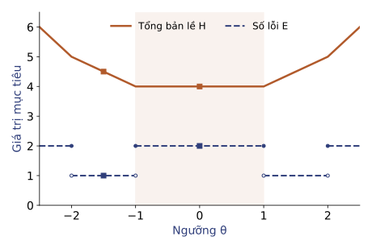
$H$ lồi, $E$ bậc thang; mọi $\theta\in[-1,1]$ tối ưu cho $H$.
Tối ưu $H$ không bảo đảm giảm số lỗi $E$ nhiều nhất.
Bài $\min_\theta H$ đã có LP tương đương. Nghiệm của $H$ trên bốn điểm được tính, rồi số lỗi $E$ được đánh giá tại đó, để kiểm tra giả định rằng hai mục tiêu có cùng nghiệm; giả định này sai.
Bảng cho hai ngưỡng: $\theta=-1{,}5$ có $H=4{,}5$, $E=1$; $\theta=0$ có $H=4$, $E=2$. Ngưỡng có $H$ nhỏ hơn lại có nhiều lỗi hơn. Chứng minh giá trị nhỏ nhất toàn cục của $H$ bằng 4: bốn số hạng bản lề là $\max(0,-1-\theta)$, $\max(0,2+\theta)$, $\max(0,2-\theta)$ và $\max(0,\theta-1)$. Hai số hạng giữa có tổng ít nhất $(2+\theta)+(2-\theta)=4$ với mọi $\theta$. Trên $[-1,1]$, tổng đó bằng đúng 4 và hai số hạng ngoài bằng 0. Ngoài đoạn này, ít nhất một số hạng ngoài dương, nên $H>4$. Vậy tập nghiệm của $H$ là cả đoạn $[-1,1]$, giá trị tối ưu 4. Trên hình, trục hoành là $\theta$; $H$ là đường gấp khúc lồi có đáy phẳng trên $[-1,1]$, còn $E$ là bậc thang.
Mọi $\theta\in[-1,1]$ đều có $E=2$, trong khi giá trị tối ưu của $E$ là 1, đạt chẳng hạn tại $\theta=-1{,}5$. Như vậy không nghiệm nào của hàm thay thế tối ưu cho bài gốc. Từ $E(\theta)\le H(\theta)$ tại mọi $\theta$ chỉ suy ra $\min E\le\min H$, ở đây $1\le4$; không suy ra hai bài có cùng tập nghiệm. Giá trị $\min H$ là một cận trên của $\min E$, không phải cận dưới. Số lỗi thật của một nghiệm đã học phải được tính lại bằng $E$. Các nghiệm trong $[-1,1]$ cũng không nhất thiết cho cùng một bộ phân loại, vì tại $\theta=\pm1$ có một điểm mang điểm số bằng 0.
Ví dụ một đặc trưng đủ nhỏ để kiểm bằng tay; mô hình phân loại nhiều đặc trưng giữ cùng hàm bản lề và biến phụ, thêm một hình phạt bậc hai theo hệ số.
Phân loại nhiều đặc trưng
$u_i\in\mathbb R^d$, $y_i\in\{\pm1\}$; chọn trước $\lambda\ge0$.
$$\begin{aligned}
\min_{w,b,\,\xi}\;&\frac{\lambda}{2}\|w\|_2^2+\sum_{i=1}^{m}\xi_i\\
\text{với}\quad&y_i(w^Tu_i+b)\ge1-\xi_i,\quad i=1,\ldots,m,\\
&\xi_i\ge0,\quad i=1,\ldots,m.
\end{aligned}$$
Hessian $\operatorname{diag}(\lambda I,0,0)$ nửa xác định dương, ràng buộc affine: bài toán QP; khi $\lambda=0$ thành LP.
Mô hình một ngưỡng chỉ để kiểm bằng tay. Trang này khái quát sang bộ phân loại tuyến tính nhiều đặc trưng có chính quy hóa, dùng lại chứng nhận QP của phần 3 và biến phụ bản lề vừa xây dựng.
Dữ liệu gồm $m$ điểm $u_i\in\mathbb R^d$ với nhãn $y_i\in\{\pm1\}$; tham số $\lambda\ge0$ do người xây dựng mô hình chọn trước. Biến là $w\in\mathbb R^d$, $b\in\mathbb R$ và $\xi\in\mathbb R^m$. Khi $\lambda>0$, mô hình này có cùng dạng với máy vectơ hỗ trợ (support vector machine, SVM) có chính quy hóa bậc hai. Điểm số $w^Tu_i+b$ thay cho $u_i-\theta$. Hai ràng buộc $y_i(w^Tu_i+b)\ge1-\xi_i$ và $\xi_i\ge0$ tương đương $\xi_i\ge\ell_h(y_i(w^Tu_i+b))$. Mục tiêu gồm hình phạt $\tfrac\lambda2\|w\|_2^2$ và tổng biến phụ. Theo thứ tự biến $(w,b,\xi)$, Hessian là $\operatorname{diag}(\lambda I,0,0)\succeq0$ và mọi ràng buộc affine, nên bài là QP lồi; khi $\lambda=0$ mục tiêu tuyến tính và bài là LP. Với $d=1$, đặt $w=1$ và $b=-\theta$ thì điểm số là $u-\theta$, trở về mô hình ngưỡng.
Đây là cải dạng chính xác của bài hàm bản lề cộng hình phạt, không phải của số lỗi: theo cùng lập luận hai chiều, tại tối ưu $\xi_i=\ell_h(y_i(w^Tu_i+b))$. Không khẳng định nghiệm duy nhất, vì $b$ không bị phạt. Nếu $H=0$ thì $E=0$, nhưng chỉ trên tập huấn luyện; điều này không cho bảo đảm nào trên dữ liệu mới. Nguồn: Boyd và Vandenberghe (2004), §8.6.1, tr. 425–427 trình bày bộ phân loại với chuẩn không bình phương; dạng bình phương $\|w\|_2^2$ ở đây là biến thể QP được suy ra từ hàm bản lề và chính quy hóa bậc hai của phần 3.
Ví dụ phân loại thay hàm mục tiêu; ví dụ chọn gói dữ liệu giữ nguyên mục tiêu chi phí, và khó khăn nằm ở miền khả thi rời rạc.
Chọn các gói dữ liệu
Nhóm phát triển mô hình nhận diện người đi bộ cần mua ảnh đã gán nhãn, đủ ba bối cảnh.
Gói Ảnh có sẵn Giá minh họa (triệu đồng) 1 Ngày khô, đêm khô 2 2 Đêm khô, trời mưa 2 3 Ngày khô, trời mưa 2
Mua trọn gói, mỗi gói tối đa một lần. Chọn các gói đủ ba bối cảnh với tổng chi phí thấp nhất.
Ví dụ phân loại xử lý một mục tiêu không lồi. Ví dụ thứ hai có mục tiêu tuyến tính nhưng quyết định là mua hay không mua từng gói, nên khó khăn nằm ở tập khả thi. Tình huống và dữ liệu được nêu trước mô hình.
Một nhóm phát triển mô hình nhận diện người đi bộ cần ảnh giao thông đã gán nhãn cho ba bối cảnh: ngày khô, đêm khô và trời mưa. Ngày khô và đêm khô đều là lúc không mưa; nhóm trời mưa gồm mọi ảnh chụp khi mưa, bất kể ngày hay đêm. Bảng cho ba gói, mỗi gói chứa ảnh của hai bối cảnh: gói 1 có ngày khô và đêm khô, gói 2 có đêm khô và trời mưa, gói 3 có ngày khô và trời mưa. Mỗi gói giá 2 triệu đồng; đây là giá giả định để minh họa, không phải dữ liệu thực. Ba gói chứa dữ liệu riêng, nên hai gói cùng phủ một bối cảnh không có nghĩa là ảnh trùng nhau.
Ô kết luận nêu luật mua: chỉ mua trọn gói, mỗi gói tối đa một lần; mục tiêu là đủ ba bối cảnh với chi phí thấp nhất. Mua cả ba gói thì đủ nhưng tốn 6 triệu đồng. Ví dụ chỉ yêu cầu có dữ liệu cho mỗi bối cảnh; số lượng ảnh, chất lượng ảnh và hiệu quả của mô hình nhận diện chưa được xét. Nguồn: phỏng theo Boyd và Vandenberghe (2004), Bài tập 4.15, tr. 193; bối cảnh và số liệu tự xây dựng.
Luật mua trọn gói được viết bằng biến nhị phân, và mỗi yêu cầu bối cảnh thành một bất đẳng thức tuyến tính trong mô hình chọn gói.
Mô hình chọn gói dữ liệu
$x_j=1$ nếu mua trọn gói $j$, $x_j=0$ nếu không mua, $j=1,2,3$.
$$\begin{aligned}
\min_{x}\;&2(x_1+x_2+x_3)\quad\text{(triệu đồng)}\\
\text{với}\quad&x_1+x_3\ge1\quad(\text{ngày khô}),\\
&x_1+x_2\ge1\quad(\text{đêm khô}),\\
&x_2+x_3\ge1\quad(\text{trời mưa}),\\
&x_j\in\{0,1\},\quad j=1,2,3.
\end{aligned}$$
Ảnh ngày khô có trong gói 1 hoặc gói 3, nên $x_1+x_3\ge1$.
Trang này viết bài chọn gói thành mô hình chính xác, giải nghĩa từng biến và từng ràng buộc bằng nội dung các gói, rồi chỉ ra vì sao mô hình không phải LP.
Biến $x_j\in\{0,1\}$ bằng 1 nếu mua trọn gói $j$ và bằng 0 nếu không mua, $j=1,2,3$. Chi phí $2(x_1+x_2+x_3)$ triệu đồng là hàm affine. Mỗi bối cảnh cho một ràng buộc phủ: ảnh ngày khô có trong gói 1 hoặc gói 3, nên cần $x_1+x_3\ge1$, như ô kết luận giải thích; tương tự, đêm khô cho $x_1+x_2\ge1$ và trời mưa cho $x_2+x_3\ge1$. Số 1 ở vế phải nghĩa là cần ít nhất một gói chứa bối cảnh đó, không phải một ảnh. Cách tiếp cận trực tiếp là liệt kê $2^3=8$ phương án. Tập khả thi chỉ gồm $(1,1,0)$, $(1,0,1)$, $(0,1,1)$ và $(1,1,1)$, với chi phí lần lượt 4, 4, 4 và 6 triệu đồng. Với nhiều gói, số phương án tăng theo hàm mũ, nên liệt kê không còn khả thi.
Mục tiêu và ràng buộc phủ đều affine, nhưng mô hình không phải quy hoạch tuyến tính, vì biến bị giới hạn nhị phân. Tập khả thi là tập rời rạc và không lồi: trung điểm của $(1,1,0)$ và $(1,0,1)$ là $(1;\,0{,}5;\,0{,}5)$, không nhị phân nên không thuộc tập khả thi. Mục tiêu affine vẫn chưa đủ để dùng LP, vì nguồn gốc của tính không lồi nằm ở miền khả thi.
Giữ nguyên mục tiêu và ba ràng buộc phủ, chỉ thay điều kiện nhị phân bằng một khoảng liên tục, sẽ được một LP; đó là phép nới lỏng.
Nới lỏng điều kiện nhị phân
Bài mua nguyên gói: $x_j\in\{0,1\}$
Bài nới lỏng: $0\le x_j\le1$
$$\begin{aligned}
\min_{x}\;&2(x_1+x_2+x_3)\quad\text{(triệu đồng)}\\
\text{với}\quad&x_1+x_3\ge1,\;\;x_1+x_2\ge1,\;\;x_2+x_3\ge1,\\
&0\le x_j\le1,\quad j=1,2,3.
\end{aligned}$$
Giữ mục tiêu và các ràng buộc phủ, thu được LP. Chỉ mô hình được nới lỏng; nhà cung cấp vẫn bán nguyên gói.
Mô hình chọn gói không lồi chỉ vì điều kiện nhị phân. Chỉ điều kiện nhị phân được thay bằng khoảng $[0,1]$; cần xác định quan hệ giữa bài mới và bài gốc.
Hai thẻ trên trang so sánh điều kiện của biến: bài mua nguyên gói dùng $x_j\in\{0,1\}$, bài nới lỏng dùng $0\le x_j\le1$. Mục tiêu và ba ràng buộc phủ giữ nguyên, nên không cần lập lại mô hình từ bảng dữ liệu. Gọi $F$ là tập khả thi của bài gốc và $R$ là tập khả thi của bài nới lỏng. Mọi phương án nhị phân khả thi đều thỏa các ràng buộc của bài nới lỏng, nên $F\subseteq R\subseteq\mathbb R^3$. Tập $R$ là giao của các nửa không gian, nên lồi. Mọi ràng buộc affine, biến liên tục, mục tiêu affine: bài nới lỏng là một LP đúng nghĩa.
Hệ quả chính: làm nhỏ cùng một hàm trên tập lớn hơn không thể cho giá trị lớn hơn, nên $\min_Rf\le\min_Ff$ với $f(x)=2\sum_jx_j$. Đây là nguồn gốc của cận dưới ở các bước sau. Ô kết luận tách mô hình khỏi giao dịch: chỉ mô hình được nới lỏng, nhà cung cấp vẫn bán nguyên gói. Giá trị $x_j=0{,}5$ không phải tỷ lệ ảnh hay xác suất mua; nó chỉ là giá trị của biến trong bài nới lỏng.
Bài nới lỏng là một LP nhỏ; nghiệm của nó cho một cận dưới chi phí, nhưng có thể không ứng với phương án mua nào.
Nghiệm phân số của bài nới lỏng
$$x^R=\left(\tfrac12,\tfrac12,\tfrac12\right)$$
$$2\left(\tfrac12+\tfrac12+\tfrac12\right)=3\ \text{triệu đồng}$$
Bối cảnh Kiểm tra Ngày khô $x_1+x_3=\tfrac12+\tfrac12=1$ Đêm khô $x_1+x_2=\tfrac12+\tfrac12=1$ Trời mưa $x_2+x_3=\tfrac12+\tfrac12=1$
Bài nới lỏng đạt chi phí 3 triệu đồng. Nghiệm này chưa phải phương án mua hợp lệ.
Bài nới lỏng là LP. Giá trị tối ưu của nó chứng minh được mà không cần bộ giải, nhưng nghiệm thu được không phải một phương án mua.
Giả thiết là ba ràng buộc phủ cùng biên $0\le x_j\le1$. Cộng ba bất đẳng thức phủ vế theo vế: $(x_1+x_3)+(x_1+x_2)+(x_2+x_3)\ge3$, tức $2(x_1+x_2+x_3)\ge3$; mọi điểm khả thi của bài nới lỏng có chi phí ít nhất 3 triệu đồng. Điểm $x^R=(1/2,1/2,1/2)$ nằm trong $[0,1]^3$ và thỏa cả ba ràng buộc với dấu bằng, như bảng kiểm trên trang cho thấy từng bối cảnh. Chi phí của nó là $2(1/2+1/2+1/2)=3$. Hai chiều kết hợp lại cho thấy $x^R$ là nghiệm tối ưu của LP, với giá trị tối ưu $L=3$ triệu đồng. Chứng minh này không phụ thuộc vào bộ giải số.
Ô kết luận nêu hai điều. Thứ nhất, bài nới lỏng đạt chi phí 3 triệu đồng; theo trang trước, đây là cận dưới cho chi phí của mọi phương án mua nguyên gói. Thứ hai, nghiệm $x^R$ có ba tọa độ bằng một nửa, chỉ có nghĩa trong bài nới lỏng. Mô hình gốc không có khái niệm mua nửa gói, và nhà cung cấp trong tình huống không bán lẻ, nên nghiệm này không dùng trực tiếp được.
Từ nghiệm phân số cần dựng một phương án mua nguyên gói và kiểm tra lại ba yêu cầu bối cảnh cho phương án đó.
Khôi phục phương án mua
Từ $x^R=(1/2,1/2,1/2)$: làm tròn lên cho $(1,1,1)$, mua cả ba gói, chi phí 6 triệu đồng.
Phương án Đủ ba bối cảnh Chi phí (triệu đồng) $(0,0,0)$ — làm tròn xuống Không 0 $(1,1,1)$ — làm tròn lên Có 6 $(1,1,0)$ — bỏ gói 3 Có 4
Gói 1 có ngày khô và đêm khô; gói 2 bổ sung trời mưa. Bỏ gói 3 khỏi $(1,1,1)$ vẫn đủ ba bối cảnh, chi phí giảm còn 4.
Nghiệm của bài nới lỏng là phân số. Trang này dựng phương án mua nguyên gói từ nghiệm đó và kiểm tra từng phương án theo ba ràng buộc phủ của bài gốc.
Bảng xét ba phương án theo các cột: phương án, có đủ ba bối cảnh hay không, và chi phí. Làm tròn xuống cho $(0,0,0)$: không mua gói nào, cả ba bối cảnh đều thiếu, nên bất khả thi dù chi phí 0. Làm tròn lên cho $(1,1,1)$: đủ ba bối cảnh với chi phí 6 triệu đồng. Ở bài phủ này, mua thêm gói không làm mất phủ, nên làm tròn lên vẫn khả thi; nhưng phương án đó tốn hơn mức cần. Bỏ gói 3 khỏi $(1,1,1)$ được $(1,1,0)$: gói 1 cung cấp ngày khô và đêm khô, gói 2 bổ sung trời mưa. Kiểm tra ba ràng buộc: $x_1+x_3=1$, $x_1+x_2=2$, $x_2+x_3=1$, đều không nhỏ hơn 1, nên phương án khả thi với chi phí 4 triệu đồng.
Nghiệm $x^R$ đối xứng nên không chỉ ra phải bỏ gói nào; bỏ gói 3 là một lựa chọn, và mỗi lựa chọn đều phải kiểm tra lại các ràng buộc. Làm tròn đơn giản không bảo đảm khả thi, như làm tròn xuống, và không bảo đảm tối ưu, như làm tròn lên. Không được khẳng định làm tròn lên luôn tốt; ở đây nó chỉ khả thi do cấu trúc bài phủ.
Phương án $(1,1,0)$ cho một cận trên 4 triệu đồng, còn bài nới lỏng cho cận dưới 3 triệu đồng; hai cận này cùng một tính chất của chi phí đủ để chứng nhận phương án tối ưu.
Cận dưới và chứng nhận nghiệm
$p^*$: chi phí nhỏ nhất khi mua nguyên gói, tính bằng triệu đồng.
Cận dưới từ LP: 3 triệu đồng
Phương án mua gói 1 + 2: 4 triệu đồng
$$3\le p^*\le4$$
Chi phí mua nguyên gói là bội của 2 triệu đồng.
Trong khoảng $[3,4]$ chỉ có 4 là bội của 2.
Phương án mua gói 1 và gói 2 là tối ưu.
Hai trang trước cho cận dưới 3 triệu đồng từ bài nới lỏng và một phương án mua 4 triệu đồng; hai con số này ghép lại thành một chứng nhận tối ưu cho bài gốc.
Ở đây $p^*$ là chi phí nhỏ nhất khi mua nguyên gói, tính bằng triệu đồng, khác với vectơ công suất $p$ ở phần 4. Thẻ trái cho khoảng $3\le p^*\le4$: cận dưới 3 là giá trị tối ưu LP, cận trên 4 là chi phí của phương án gói 1 cộng gói 2. Khung tổng quát: với $F\subseteq R$ và một phương án $\hat x\in F$, $$L=\min_Rf\le p^*=\min_Ff\le U=f(\hat x).$$ Khi $L$ hữu hạn và đạt được, khoảng cách $U-p^*$ không vượt quá $U-L$. Quan hệ cận đến từ bao hàm $F\subseteq R$; tính lồi của $R$ chỉ cho phép giải bài nới lỏng bằng công cụ tối ưu lồi.
Thẻ phải khép khoảng bằng cấu trúc chi phí: mỗi gói giá 2 triệu đồng, nên mọi chi phí mua nguyên gói là bội của 2, và trong $[3,4]$ chỉ có 4 là bội của 2. Do đó $p^*=4$ và phương án mua gói 1 và gói 2 tối ưu. Riêng $3\le p^*$ chưa đủ kết luận, vì khoảng $[3,4]$ còn các giá trị không phải bội của 2. Nguồn: Boyd và Vandenberghe (2004), Bài tập 4.15, tr. 193; bối cảnh gói ảnh và số liệu tự xây dựng, giá giả định.
Hai ví dụ của phần đã dùng ba quan hệ khác nhau với bài gốc; bảng phân biệt ba cách xử lý đặt chúng cạnh nhau.
Phân biệt ba cách xử lý
Cách xử lý Bảo toàn Ý nghĩa nghiệm Cải dạng chính xác ($H$ → LP) Giá trị $H$ Khôi phục ngưỡng tối ưu cho $H$ Hàm thay thế ($E\to H$) Không giữ mục tiêu Đánh giá $E$ riêng tại nghiệm đã học Nới lỏng ($F\to R$) Giữ mục tiêu; mở rộng miền Cần khôi phục phương án
Phần 5 đã dùng ba quan hệ khác nhau giữa bài toán được giải và bài toán gốc. Trang này đặt ba quan hệ cạnh nhau, dùng chính hai ví dụ vừa học, để mỗi kết quả được đọc đúng loại bảo đảm.
Bảng có ba cột: cách xử lý, đại lượng được bảo toàn, và ý nghĩa của nghiệm. Hàng thứ nhất là cải dạng chính xác từ $H$ sang LP: với mỗi $\theta$, giá trị nhỏ nhất của mục tiêu LP theo $\xi$ đúng bằng $H(\theta)$, nên nghiệm LP cho đúng ngưỡng tối ưu của $H$ qua ánh xạ lấy lại $\theta$. Hàng thứ hai là hàm thay thế từ $E$ sang $H$: mục tiêu đã đổi, nên không có đại lượng nào của bài gốc được giữ; số lỗi phải được tính riêng tại nghiệm đã học. Bất đẳng thức $E\le H$ tại mọi điểm không suy ra điểm nhỏ nhất của $H$ là điểm nhỏ nhất của $E$, như ví dụ bốn điểm đã cho thấy.
Hàng thứ ba là nới lỏng từ $F$ sang $R$: mục tiêu giữ nguyên, miền được mở rộng. Giá trị tối ưu LP cho cận dưới của bài gốc, còn nghiệm phân số phải được khôi phục và kiểm tra lại, nếu không phương án có thể bất khả thi. Ba quan hệ đều cung cấp thông tin, nhưng là các loại thông tin khác nhau: một nghiệm đúng, một nghiệm cần đánh giá lại, và một cận.
Câu hỏi còn lại là cách đánh giá một nghiệm hoặc một con số theo chính bài toán gốc; ba câu hỏi kiểm tra cuối phần thay đổi giả thiết để kiểm tra điều đó.
Đánh giá nghiệm theo bài toán gốc
Câu hỏi:
Với một tập dữ liệu khác, hàm bản lề có $H=0$: có suy ra $E=0$ trên tập huấn luyện? Trên dữ liệu mới thì sao?
Phương án khả thi LP với chi phí 6: có phải cận dưới của bài gốc không?
Nếu nghiệm tối ưu LP đã nhị phân thì kết luận gì?
Ba câu hỏi kiểm tra việc đọc đúng loại bảo đảm sau khi thay mục tiêu hoặc nới lỏng, bằng cách thay một giả thiết trong hai ví dụ của phần.
Câu 1: với một tập dữ liệu khác có $H=0$ tại nghiệm, vì $E\le H$ và $E\ge0$ nên số lỗi trên tập huấn luyện bằng 0. Kết luận chỉ đúng trên tập huấn luyện; trên dữ liệu mới không có bảo đảm nào. Đây là vấn đề tổng quát hóa, không phải hệ quả của việc dùng hàm thay thế. Câu 2: phương án chi phí 6 không phải cận dưới. Trong ví dụ, điểm đó là $(1,1,1)$, khả thi cho cả bài gốc, nên 6 là một cận trên của $p^*$. Nói chung, một điểm chỉ khả thi cho LP không cho cận trên của bài gốc, và giá trị tại một điểm khả thi bất kỳ cũng không cho cận dưới. Chỉ giá trị tối ưu LP, bằng 3, là cận dưới đã chứng nhận.
Câu 3: nếu nghiệm tối ưu LP đã nhị phân thì nó khả thi cho bài gốc và chi phí của nó bằng cận dưới, nên nó tối ưu cho bài gốc. Trong ví dụ nghiệm LP là phân số, nên cần bước khôi phục và chứng nhận bằng tính chất bội của 2. Ba câu cho thấy cùng một nguyên tắc: mỗi con số phải được gắn với bài toán mà nó thực sự là giá trị tối ưu, cận dưới hay cận trên.
Phần 6 dùng lại các lớp bài toán, phép cải dạng và cách đánh giá nghiệm của phần 1 đến phần 5 cho một biến thể mới của bộ phân loại.
6 Phần cuối: dùng lại toàn bộ các dạng đã học để tự kiểm một bài toán mới.
Phần 5 kết thúc bằng sự phân biệt giữa cải dạng tương đương, thay mục tiêu và nới lỏng. Phần 6 yêu cầu dùng lại toàn bộ chu trình đó cho một bài toán mới, như dòng giới thiệu trên trang nêu.
Ba năng lực cần tổng hợp là: nhận dạng LP, QP và GP từ cấu trúc của mục tiêu và ràng buộc; cải dạng hoặc xấp xỉ mô hình, kèm giả thiết và quan hệ với bài gốc; chứng nhận mục tiêu và tập khả thi lồi, rồi kiểm tra nghiệm trong ngữ cảnh ban đầu. Phần này có ba nhóm trang. Nhóm đầu ôn bảng các dạng chuẩn, phép đổi biến của GP và khung chứng nhận bốn bước. Nhóm giữa xét một biến thể của bộ phân loại bản lề ở phần 5: chỉ được dùng tối đa $k$ đặc trưng, ràng buộc này làm miền không lồi, và hình phạt chuẩn một được xét như một mô hình thay thế. Nhóm cuối gồm ba câu hỏi kiểm tra và trang tổng kết.
Các dạng chuẩn LP, QP và QCQP cùng điều kiện $P_i\succeq0$ là công cụ đầu tiên được dùng lại cho bước nhận dạng.
Các dạng bài toán đã học
Biến $x\in\mathbb R^n$. Ký hiệu chung: $f_i(x)=\tfrac12 x^TP_ix+q_i^Tx+r_i$ với $P_i=P_i^T$, dùng cho mục tiêu ($i=0$) và các ràng buộc bất đẳng thức ($i=1,\dots,m$).
Dạng Mục tiêu và ràng buộc Chứng nhận
LP $\min c^Tx$ với $Gx\le h,\ Ax=b$ hàm affine, tập khả thi là đa diện lồi QP $\min f_0(x)$ với $Gx\le h,\ Ax=b$ $P_0\succeq 0$ QCQP $\min f_0(x)$ với $f_i(x)\le 0$ ($i=1,\dots,m$), $Ax=b$ $P_i\succeq 0$ với mọi $i=0,\dots,m$
Chứng nhận cả hàm mục tiêu và tập khả thi.
Trang này ôn ba lớp bài toán lồi của phần 2 và phần 3 trong một bảng, với cùng ký hiệu, để làm điểm tựa cho bước nhận dạng.
Ký hiệu chung $f_i(x)=\tfrac12x^TP_ix+q_i^Tx+r_i$ với $P_i=P_i^T\in\mathbb R^{n\times n}$, $q_i\in\mathbb R^n$, $r_i\in\mathbb R$; chỉ số $i=0$ dành cho mục tiêu và $i=1,\ldots,m$ cho các bất đẳng thức bậc hai. Trong các hàng LP và QP, $c\in\mathbb R^n$; $G$ có $n$ cột và số hàng bằng số bất đẳng thức tuyến tính, $h$ có cùng số hàng đó; $A\in\mathbb R^{p\times n}$, $b\in\mathbb R^p$. Bảng đọc theo hàng: cột giữa cho mục tiêu và ràng buộc, cột phải cho điều kiện chứng nhận. LP có mục tiêu affine và tập khả thi là đa diện lồi. QP thêm phần bậc hai vào mục tiêu, cần $P_0\succeq0$. QCQP cho phép cả bất đẳng thức bậc hai, cần $P_i\succeq0$ với mọi $i=0,\ldots,m$. Kiểm tra $P_i\succeq0$, tức $v^TP_iv\ge0$ với mọi $v$, chứng nhận tính lồi của từng hàm bậc hai. LP là trường hợp $P_i=0$.
Các ví dụ đã học ứng với bảng như sau: bài pha trộn, hồi quy với sai số tuyệt đối, hồi quy với sai số lớn nhất, và tổ hợp sai số tuyệt đối với chuẩn một là LP; bình phương tối thiểu và ba tổ hợp chính quy hóa còn lại là QP; hồi quy với giới hạn cứng độ lớn hệ số là QCQP. Ô kết luận nhắc rằng một chứng nhận phải bao gồm cả hàm mục tiêu và tập khả thi. Các mô hình trong bảng lồi theo biến đang dùng, có thể sau khi thêm biến phụ.
Quy hoạch hình học không có trong bảng vì nói chung nó không lồi theo biến gốc; chứng nhận tương tự chỉ có sau phép đổi biến logarit.
Quy hoạch hình học và đổi biến
GP dạng tổng đơn thức
$$\begin{aligned}
\min_{x}\ & f_0(x)\\
\text{với } & f_i(x)\le 1,\\
& g_j(x)=1,\quad x>0
\end{aligned}$$
$f_i$: tổng đơn thức dương; $g_j$: đơn thức.
Sau đổi biến $z=\log x$
$$\begin{aligned}
\min_{z}\ & \log f_0(\exp z)\\
\text{với } & \log f_i(\exp z)\le 0,\\
& \log g_j(\exp z)=0,\quad z\in\mathbb R^n
\end{aligned}$$
Sau đổi biến: mục tiêu và các bất đẳng thức lồi, các đẳng thức affine.
Bảng trước gồm các lớp lồi theo biến đang dùng. Quy hoạch hình học cần thêm một bước đổi biến; trang này đặt dạng GP trước và sau đổi biến cạnh nhau.
Thẻ trái là GP với $x>0$: $f_i$ là tổng đơn thức dương, $g_j$ là đơn thức; ký hiệu $g_j$ ở đây đóng vai $h_j$ của phần 4. Một đơn thức có dạng $c\,x_1^{a_1}\cdots x_n^{a_n}$ với $c>0$ và số mũ thực bất kỳ; tổng đơn thức dương là tổng các đơn thức như vậy. Thẻ phải là bài sau khi đặt $z=\log x$, tức $x=\exp z$ theo từng thành phần, với miền mới là toàn bộ $\mathbb R^n$. Mỗi đơn thức trở thành $\exp$ của một hàm affine của $z$, nên logarit của nó affine và các đẳng thức trở thành affine. Mỗi tổng đơn thức dương trở thành tổng các $\exp$ của hàm affine, và logarit của tổng đó là hàm logarit tổng hàm mũ, lồi. Do đó mục tiêu và các bất đẳng thức lồi, như dòng cuối của thẻ phải ghi. Điều kiện áp dụng là biến dương và hệ số dương.
Quan hệ nghiệm: nếu $z^\star$ là nghiệm của dạng lồi thì $x^\star=\exp z^\star$ là nghiệm của GP gốc; khi giá trị tối ưu đạt được, giá trị tối ưu gốc bằng $\exp v^\star$ với $v^\star$ là giá trị tối ưu của dạng lồi. Hai ví dụ đã học, hộp kín có thể tích cho trước và phân bổ công suất cho hai đường truyền, đều đưa được về dạng này. Nguồn: Boyd và Vandenberghe (2004), Convex Optimization , §4.5.
Bảng dạng chuẩn và phép đổi biến được gom lại thành một quy trình chứng nhận bốn bước áp dụng cho mọi bài toán mới.
Chứng nhận một bài toán lồi
Xác định biến và miền xác định.
Chứng minh $f_0$ lồi: Hessian nửa xác định dương, hoặc quy tắc cấu tạo.
Chứng minh tập khả thi lồi: bất đẳng thức hàm lồi $\le 0$, đẳng thức affine.
Nếu cải dạng: giải thích quan hệ với bài gốc và cách khôi phục nghiệm.
Câu hỏi: mục tiêu lồi đã đủ để kết luận bài toán lồi chưa?
Hai trang trước ôn các lớp bài toán. Từ đó rút ra một quy trình chứng nhận bốn bước dùng cho mọi mô hình, kể cả biến thể giới hạn số đặc trưng ngay sau đó.
Bước 1 xác định biến và miền xác định; chẳng hạn hàm nghịch đảo và quy hoạch hình học đòi biến dương. Bước 2 chứng minh $f_0$ lồi, bằng Hessian nửa xác định dương hoặc bằng quy tắc cấu tạo. Tiêu chuẩn Hessian đòi hàm khả vi hai lần trên một miền mở lồi; khi hàm không khả vi, dùng quy tắc cấu tạo. Ví dụ đã gặp: trị tuyệt đối $|x|=\max(x,-x)$ lồi theo bất đẳng thức tam giác; hàm bản lề là giá trị lớn nhất của hai hàm affine; hàm bậc hai với $P\succeq0$ kiểm bằng Hessian; với GP, bước này đi cùng phép đổi biến và tính lồi của logarit tổng hàm mũ. Bước 3 chứng minh tập khả thi lồi: mỗi bất đẳng thức có dạng hàm lồi nhỏ hơn hoặc bằng 0, mỗi đẳng thức affine. Không suy ngược rằng một $f_i$ không lồi thì tập khả thi không lồi, vì tập đó có thể lồi qua một biểu diễn khác. Bước 4, khi có cải dạng, giải thích quan hệ với bài gốc và cách khôi phục nghiệm, như chứng minh hai chiều ở biến phụ hay ánh xạ $x=e^z$ ở GP.
Câu hỏi trên trang: mục tiêu lồi đã đủ kết luận bài toán lồi chưa? Đáp án: chưa; phải xét cả miền xác định và tập khả thi. Ví dụ đã gặp ở phần 3: tổng bình phương sai số $E(w)$ lồi, nhưng thêm ràng buộc $\|w\|_2^2\ge R^2$ với $R>0$ làm tập khả thi là phần ngoài hình tròn, không lồi, nên bài toán không lồi.
Bộ phân loại giới hạn số đặc trưng có mục tiêu lồi giống bài phân loại ở phần 5, nhưng thêm một ràng buộc đếm hệ số mà bước 3 của quy trình phải kiểm tra.
Giới hạn số đặc trưng
Bộ phân loại ảnh chỉ dùng tối đa $k$ đặc trưng để giảm chi phí tính toán.
Dữ liệu cho trước: $u_i\in\mathbb R^d$, $y_i\in\{\pm1\}$, $i=1,\dots,m$; và $k\in\{1,\dots,d-1\}$ với $d\ge 2$. Biến: $w\in\mathbb R^d$, $b\in\mathbb R$.
$$H(w,b)=\sum_{i=1}^m \max\bigl(0,\,1-y_i(w^Tu_i+b)\bigr)$$
$$\min_{w,b}\ H(w,b)\quad\text{với}\quad \|w\|_0\le k$$
$\|w\|_0=\#\{j: w_j\ne 0\}$ — đếm số đặc trưng được dùng, không phải chuẩn.
Quy trình bốn bước được áp dụng cho một nhu cầu mới của bộ phân loại bản lề ở phần 5: chỉ được dùng tối đa $k$ đặc trưng để giảm chi phí tính toán. Mô hình cần dữ liệu, biến và một ràng buộc giới hạn cứng.
Dữ liệu gồm $m$ điểm $u_i\in\mathbb R^d$ với nhãn $y_i\in\{\pm1\}$ và số nguyên $k\in\{1,\ldots,d-1\}$, $d\ge2$. Biến là $w\in\mathbb R^d$ và $b\in\mathbb R$. Mục tiêu $H(w,b)$ là tổng mất mát bản lề trên các mẫu huấn luyện, giống mô hình nhiều đặc trưng ở phần 5 nhưng không có hình phạt. Ràng buộc $\|w\|_0\le k$ đếm số hệ số khác 0 của $w$: đặc trưng $j$ được dùng khi và chỉ khi $w_j\ne0$. Ràng buộc chỉ đặt lên $w$; $b$ là hệ số chặn, không phải đặc trưng, nên không được đếm. Giả thiết $k\le d-1$ để ràng buộc thực sự hạn chế. Như dòng cuối trang ghi, $\|w\|_0$ không phải một chuẩn, dù có ký hiệu giống chuẩn: chẳng hạn nó không đổi khi nhân $w$ với một số khác 0.
Cách làm trực tiếp là liệt kê mọi tập chỉ số có không quá $k$ phần tử, tức mọi tập hỗ trợ (support) khả dĩ; với mỗi tập, cố định các hệ số ngoài tập bằng 0, giải bài lồi theo các hệ số trong tập và hệ số chặn, rồi chọn kết quả tốt nhất. Số bài con là $\sum_{j=0}^k\binom dj$, tăng theo tổ hợp, nên cách này khó dùng khi $d$ lớn. Mô hình có ít hệ số khác 0 gọi là mô hình thưa; khi đó chi phí dự đoán chỉ phụ thuộc số đặc trưng được dùng.
Mục tiêu $H$ đã được chứng nhận lồi ở phần 5; bước còn lại của quy trình là kiểm tra tập khả thi của ràng buộc đếm có lồi hay không.
Miền giới hạn đặc trưng không lồi
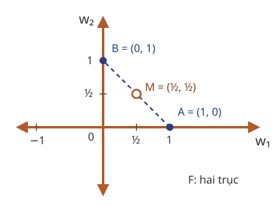
Trung điểm $M$ của hai điểm thuộc $F$ lại không thuộc $F$.
$d=2$, $k=1$: $F=\{w:\|w\|_0\le 1\}$ là hợp của hai trục.
$A=(1,0)$, $B=(0,1)$: mỗi điểm có 1 hệ số khác 0, thuộc $F$.
$M=(A+B)/2=(0.5,0.5)$: có 2 hệ số khác 0, $M\notin F$.
$\Rightarrow$ $F$ không lồi.
Mục tiêu $H$ lồi. Trang này kiểm tra bước 3 của quy trình chứng nhận cho ràng buộc $\|w\|_0\le k$, trước hết trên trường hợp nhỏ nhất có thể vẽ được.
Với $d=2$ và $k=1$, tập $F=\{w:\|w\|_0\le1\}$ gồm các vectơ có nhiều nhất một thành phần khác 0, tức hợp của hai trục tọa độ. Trên hình, $F$ là hai trục; điểm $A=(1,0)$ và $B=(0,1)$ nằm trên hai trục nên thuộc $F$. Trung điểm $M=(A+B)/2=(0{,}5;\,0{,}5)$ có hai thành phần khác 0, nằm ngoài cả hai trục, nên $M\notin F$. Một tập lồi phải chứa đoạn nối hai điểm bất kỳ của nó, nên $F$ không lồi.
Khái quát cho mọi $1\le k<d$: chọn hai vectơ có tập chỉ số khác 0 lần lượt là $S_1=\{1,\ldots,k\}$ và $S_2=\{1,\ldots,k-1\}\cup\{k+1\}$, mọi hệ số trên tập bằng 1, các hệ số còn lại bằng 0. Mỗi vectơ dùng đúng $k$ đặc trưng. Trung điểm có hệ số 1 tại $k-1$ vị trí chung và hệ số $1/2$ tại hai vị trí riêng, nên dùng $k+1$ đặc trưng và vi phạm ràng buộc. Khi $k=1$, phần chung rỗng và $S_2=\{2\}$, trùng với hình vẽ. Giữ hệ số chặn bằng 0 ở cả hai phương án thì trung điểm vẫn vi phạm, nên tập khả thi theo $(w,b)$ không lồi. Hai trường hợp bị loại đều lồi: $k=0$ chỉ cho vectơ không, $k=d$ cho toàn không gian. Mục tiêu $H$ lồi nhưng miền không lồi, nên bài toán giới hạn số đặc trưng không phải bài toán lồi.
Miền không lồi và không đưa được về một lớp lồi bằng các phép cải dạng đã học; giống phần 5, lựa chọn còn lại là thay ràng buộc đếm bằng một hình phạt lồi trong hàm mục tiêu.
Thay bằng hình phạt chuẩn một
Nhu cầu: vừa giữ mất mát nhỏ, vừa khuyến khích hệ số bằng 0.
$\min_{w,b}\ H(w,b)+\lambda\|w\|_1$, $\lambda\ge 0$ chọn trước; $w,b$ tự do
$H$ và chuẩn một đều lồi $\Rightarrow$ mục tiêu lồi.
Vectơ $\|w\|_1$ Số hệ số khác 0
$(2,0)$ 2 1 $(1,1)$ 2 2
Mô hình thay thế lồi; không bảo đảm dùng tối đa $k$ đặc trưng.
Ràng buộc $\|w\|_0\le k$ làm miền không lồi. Một hình phạt lồi thay cho ràng buộc đó; cần chứng minh bài có phạt cải dạng được thành LP và kiểm tra mô hình thay thế có giữ yêu cầu giới hạn số đặc trưng hay không.
Mục tiêu $H(w,b)+\lambda\|w\|_1$ lồi vì là tổng hai hàm lồi. Bảng cho hai vectơ $(2,0)$ và $(1,1)$ có cùng chuẩn một bằng 2 nhưng số hệ số khác 0 là 1 và 2: chuẩn một không phân biệt được hai vectơ này, nên nó chỉ khuyến khích tính thưa, không đếm số đặc trưng. Cải dạng LP: thêm $\xi_i\ge0$, $\xi_i\ge1-y_i(w^Tu_i+b)$ cho từng điểm và $t_j\ge w_j$, $t_j\ge-w_j$ cho từng thành phần của $w$; mục tiêu $\sum_i\xi_i+\lambda\sum_jt_j$. Với mọi $(w,b)$, chọn $\xi_i$ bằng số hạng bản lề và $t_j=|w_j|$ được cùng giá trị mục tiêu. Ngược lại, mọi bộ khả thi có mục tiêu không nhỏ hơn $H(w,b)+\lambda\|w\|_1$, vì $\xi_i\ge\max(0,1-y_i(w^Tu_i+b))$ và $\sum_jt_j\ge\|w\|_1$ khi $\lambda\ge0$. Hai bài cùng giá trị tối ưu, và khối $(w,b)$ của nghiệm LP là nghiệm của bài có phạt. Phép khôi phục này chỉ dành cho bài có phạt; bài giới hạn cứng phải được kiểm tra riêng.
Phản ví dụ cho thấy ô kết luận đúng: lấy bốn điểm $u_1=(1,0)$, $y_1=1$; $u_2=(-1,0)$, $y_2=-1$; $u_3=(0,1)$, $y_3=1$; $u_4=(0,-1)$, $y_4=-1$, là dữ liệu số tự chọn. Theo từng tọa độ $j$, cặp điểm đối xứng cho tổng hai số hạng bản lề ít nhất $2\max(0,1-w_j)$, nên $H\ge\sum_j2\max(0,1-w_j)$. Xét ba trường hợp $w_j<0$, $0\le w_j\le1$, $w_j>1$ được $2\max(0,1-w_j)+|w_j|\ge1$, dấu bằng chỉ khi $w_j=1$. Với $\lambda=1$, suy ra $H+\|w\|_1\ge2$, đạt tại $w=(1,1)$, $b=0$, và mọi nghiệm đạt cận đều có $w_1=w_2=1$, $b=0$. Nghiệm có hai hệ số khác 0, vi phạm giới hạn $k=1$. Vậy hình phạt $\lambda>0$ không bảo đảm $\|w\|_0\le k$. Nguồn: Boyd và Vandenberghe (2004), Convex Optimization , §6.2, tr. 304–305 và §6.3.2.
Phản ví dụ bốn điểm và hình phạt chuẩn một là dữ kiện cho ba câu hỏi kiểm tra về miền khả thi, bảo đảm của hình phạt và cách đánh giá nghiệm.
Kiểm tra các biến thể
Câu hỏi:
Thay giới hạn cứng bằng $|w_1|+|w_2|\le 2$: tập khả thi có lồi không? Điểm $(1,1)$ có được phép?
Phạt $\lambda>0$ có bảo đảm $\|w\|_0\le 1$ không?
Tìm được nghiệm $(w,b)$ của bài có phạt: cần kiểm tra gì ở bài gốc?
Trang này kiểm tra ba năng lực của bài trên biến thể giới hạn số đặc trưng: nhận dạng tập khả thi, đọc đúng bảo đảm của một mô hình thay thế, và đánh giá nghiệm theo bài gốc.
Câu 1: tập $\{w:|w_1|+|w_2|\le2\}$ là hình thoi tâm gốc, tập mức dưới của chuẩn một, nên lồi. Điểm $(1,1)$ có $|w_1|+|w_2|=2$ nên được phép, dù nó dùng 2 đặc trưng. Giới hạn chuẩn một khác giới hạn đếm $\|w\|_0\le1$: nó lồi nhưng không kiểm soát số đặc trưng. Câu 2: không. Với dữ liệu bốn điểm và $\lambda=1$ ở trang hình phạt, nghiệm của $H+\|w\|_1$ là $w=(1,1)$, $b=0$, có 2 hệ số khác 0, vi phạm $\|w\|_0\le1$. Hình phạt chỉ khuyến khích tính thưa, không bảo đảm số đặc trưng.
Câu 3: không chỉ đọc giá trị mục tiêu có phạt. Cần kiểm tra số đặc trưng thực dùng của $w$, rồi đánh giá lại mất mát $H(w,b)$ và số lỗi theo bài gốc. Hai giá trị $H$ và $H+\lambda\|w\|_1$ không cùng thước đo nên không so sánh trực tiếp. Nếu cắt bớt đặc trưng để đạt đúng $k$, phải tính lại mất mát trên tập đặc trưng còn lại, và không có bảo đảm nghiệm sau khi cắt còn tối ưu. Ba câu tương ứng với nhận dạng, đọc quan hệ với bài gốc và diễn giải nghiệm.
Ba câu hỏi ứng với ba năng lực của bài: nhận dạng tập khả thi, quan hệ giữa mô hình thay thế và bài gốc, và diễn giải nghiệm $(w,b)$ theo bài gốc.
Tổng kết bài giảng
Nhận dạng: đọc LP/QP/GP từ cấu trúc mục tiêu và ràng buộc.Cải dạng/xấp xỉ: nêu rõ giả thiết và quan hệ với bài gốc.Chứng nhận: chứng nhận tính lồi và diễn giải nghiệm trong bài toán ban đầu.
Mỗi mô hình cần: dữ liệu, biến, mục tiêu, ràng buộc, chứng nhận, ý nghĩa nghiệm.
Đọc thêm: Boyd–Vandenberghe, Convex Optimization (2004), chương 4; §6.2; §6.3.2.
Ba năng lực trên trang ứng với ba nhóm ví dụ đã học, và danh sách sáu thành phần là tiêu chí kiểm tra một mô hình hoàn chỉnh.
Nhận dạng dựa trên bảng dạng chuẩn và dạng GP: bài pha trộn đọc ngay là LP, hồi quy với giới hạn cứng là QCQP, bài hộp là GP. Cải dạng hoặc xấp xỉ có ba loại quan hệ với bài gốc: tương đương chính xác (biến phụ cho trị tuyệt đối, đổi biến logarit cho hộp và công suất), thay mục tiêu (hàm bản lề thay số lỗi, hình phạt chuẩn một thay giới hạn đếm) và nới lỏng (điều kiện nhị phân của bài chọn gói). Chứng nhận gồm chứng minh tính lồi và diễn giải nghiệm trong bài ban đầu, kể cả dùng phản ví dụ, như trung điểm nằm ngoài miền giới hạn đặc trưng.
Thành phần cuối của danh sách, ý nghĩa nghiệm, là nơi dễ sai nhất: một nghiệm đúng về toán vẫn có thể bị đọc sai, như giá trị của $H$ bị nhầm với số lỗi hay nghiệm phân số bị nhầm với phương án mua. Nguồn đọc thêm: Boyd và Vandenberghe (2004), Convex Optimization , chương 4 cho các dạng chuẩn; §6.2 và §6.3.2 cho xấp xỉ theo chuẩn một và chính quy hóa.